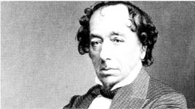
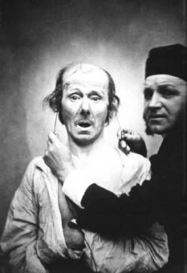

9. BÖLÜM
YALAN TESPİTİ
“Gerçek şu ki, bütün yalanlar ve kötülükler pis kokar. Onları belki bir süre saklayabilirsiniz ama bu çok uzun sürmez.”
“Eğer ıssız bir adada yaşamıyorsanız, bugün size yalan söylenmiş olması ve sizin de birilerini kandırmış olma ihtimaliniz oldukça yüksektir. Kandırma sosyal etkileşimin ana esaslarından biridir: İnsanlar e-postalarda %14, yüz yüze iletişimde %27 ve telefon görüşmelerinin %37’sinde bunu kullandıklarını itiraf etmektedirler513 ve günde ortalama iki kez yalan söylemektedirler.”514
Yalan İşaretlerinin Tespiti515
Araştırmalar ve bizlerin kişisel tecrübeleri gösteriyor ki; aslında bir yalan denizinde yaşıyoruz. O kadar çok yalanla karşılaşıyoruz ki günlük hayatta; bunlara iltifatları dahil etmiyorum bile. Ortalama bir insan günde yaklaşık 200 kez yalan söylüyor.516 Oto galerici, kaza yapmış bir arabayı kazasız gibi satmaya çalışıyor. Kaza yapan adam, sigorta eksperine, kaza esnasında alkolsüz olduğuna dair yeminler ediyor. Yakalanan yankesici, hiçbir şey çalmadığı konusunda emin. Katil, karıncayı dahi asla incitmemiş. Yeni tanıştığınız iş arkadaşınız, kendisi hakkında olmayan gerçekleri, bire bin katarak anlatıyor. Aslında düşündüğünüz zaman, gün boyunca yalanın ardı arkası kesilmiyor.
Yalan tespiti üzerine gazetelerde bazı haberler çıkar. Televizyona çıkan bazı uzmanlar, yalan yakalama üzerine ipuçları sunar. Lie to Me dizisi var örneğin, Dr. Lightman isimli kahramanı, adamın burnunu kıpırdatmasından, yalan söylediğini anlayıveriyor. Yalanı anlamak, aslında bir anlamda gerçek duyguları da anlamaktır. Duyguları anlamak, gerçekten de büyük bir güçtür. Acaba bunlar gerçek olabilir mi? Gerçekten de böyle bir gücü elde edebilir miyiz? Başkalarının zihnini okuyabilmek mümkün müdür, özellikle de o kişi bu düşüncelerini saklamak için gayret içerisindeyse.
Aslında pek çoğumuz, farkında olmasak da yalanları, en azından yalan beyanları tespit etmeye çalışıyoruz. Örneğin valiliklerde, her ay bir komisyon kuruluyor. Bu komisyona, Türklerle evlenerek vatandaşlık elde etmek isteyen kişiler ve evlendikleri Türkler çağrılıyor. Elbette bir ön araştırma yapılıyor ama sonuçta kişilerle yapılan görüşmeden de, gerçek bir aşk evliliği mi yaptıkları, yoksa sahte bir evlilikle vatandaşlık mı almaya çalıştıkları anlaşılmaya çalışılıyor. Banka müdürü, verdiği kredinin geri dönüp dönmeyeceğini araştırıyor. Baba, kızının doğum gününe kiminle gideceğinden emin olmak isterken, patron işin neden yetişmediği konusunda personelini sorguluyor.
İş başvurusuna gelen kişilerin beyanlarının ne derece doğru olduğu, yine yalan tespitinin ilgi alanlarından. Yazılan özgeçmişlerin üçte biri yanlış bilgiler barındırıyor.517Hangi işveren, gerçekten doğru bilgiler veren ve gerçekten işine yarayacak olan çalışanı bulmak istemez?
Çalışmanın bu bölümünde, “Yalan İşaretlerinin Tespiti” kavramı üzerinde durulmuş ve bu alana ilişkin yapılan çalışmalara yer verilmiştir. Yalan, toplum hayatında önemli bir kavramdır. Yalan, her türlü toplumsal ve dinsel normun yasakladığı, herkesin nefret ettiği bir olgudur. Ancak, hırsızlığın, cinsel tecavüzün ya da cinayetin aksine; hemen hemen herkesin düzenli olarak işlediği ahlaki bir suçtur.518 Aslında, bazen farkına bile varmadan, o kadar sık yalan söyleriz ki. Örneğin, sıradan bir kişi günde 200 kez yalan söylemektedir.519 O kadar içselleştirmişizdir yalan söylemeyi. Farkında olmadan, yalan, hayatımızın bir parçası oluvermiştir.
Sözsüz Sızıntı Kavramı
Konuya, içeriği son derece açıklayıcı bir örnekle başlamak istiyorum:520
Soğuk Savaş döneminde, eski bir Amerikan askeri, casusluk iddiasıyla sorgulanır. FBI’ın uzun süren sorgulaması süresince, kendisinin casusluk yaptığını kabul etmekle birlikte, birlikte çalıştığı adamların isimlerini vermeyi reddetmiştir.
Sorgulamanın ikinci seansında, askere 8 x 12 ebadında 32 tane, üzerinde gizli bilgilere ulaşma yetkisi olan askerlerin isimlerinin yazılı olduğu kart gösterilir. Askerden bu kartları okuması ve istediği yorumu yapması istenir. Asker kartlara bakarken, sorgulayan ajan tarafından, gözleri, gözbebeklerindeki büyüme dahil olmak üzere gözlenir. Kartlar bitince, ajan askere teşekkür ederek ayrılır. İki gün sonra ajan, iki askerin şahsi dosyalarıyla birlikte geri gelir. Dosyalarla karşılaşan asker, şaşkınlığını gizleyemez ve kısa bir süre sonra bu şahısların da işin içerisinde olduğunu itiraf etmek zorunda kalır.
Askerin farkında olmadığı şey, kartlarda iki işbirlikçinin ismini gördüğünde, kaşlarının tanıdığını belli eder şekilde, farkında olmadan belli belirsiz kalktığı ve kaygısı sonucu gözbebeklerinin bir anda küçüldüğüdür. Bu sözsüz sızıntı sayesinde, FBI ajanı, işbirlikçilerin kimler olduğunu anlayabilmiştir.
İpucu: Yalan tespit etmek istiyorsanız, karşınızdakini bir bütün olarak gözlemlemeyi alışkanlık haline getirmelisiniz. Yalan ne yalnızca kullanılan kelimelerden, ne de söze dökülmemiş davranışlardan anlaşılabilir. Yetişkin insanları yalan söylerken, küçük çocuklardan ayıran en önemli özellik, onların tüm vücutlarını ve gayretlerini kullanarak yalan söyledikleridir. Bu nedenle yalan yakalamak zahmetli ve bir o kadar zorlayıcı bir çabadır. Kitabın yalnızca bu bölümü değil, tamamı yalan yakalamaya yararlı ipuçları taşır. Bunun tek bir kolay yolu olmadığı bu bölümde anlatılacaktır. İnsanların yalanını yakalamaya çalışmaktan önce, onları tanımaya çalışın. Gerisi kendiliğinden gelecektir. Bu kitap, kendinizi ve başkalarını tanımanın elkitabıdır.
İnsanlar, sosyal bir hayatın içerisinde yaşarlar. Bundan, daha önceki bölümlerde bahsedilmişti. Gün içerisinde insanlarla karşılaşıyoruz, telefonlaşıyoruz, alışveriş yapıyoruz, ailemizi ziyaret ediyoruz, patronumuza işle ilgili hesap veriyoruz ve bunun gibi sayılamayacak kadar çok sayıda etkileşimde bulunuyoruz. Her etkileşim, en nihayetinde bir bilgi aktarımıdır. Sevmediğimiz insanla bile karşılaştığımızda sırtımızı dönüyoruz ya da yolumuzu değiştiriyoruz. Onunla konuşmayınca sanki etkileşim olmuyormuş gibi görünüyor ama aslında ondan hoşlanmadığımızı çok net bir şekilde iletmiş oluyoruz; o da anlayışlı bir insansa bu mesajı alıyor ve alışveriş tamamlanmış oluyor.
Hayatın içerisindeki bu etkileşimler içerisinde, her zaman doğruyu söylemeyiz. Aslında birçok araştırmaya göre, çok sık yalan söyleriz. Çoğunlukla bunun farkında olmayız ya da yalan söylüyormuşuz gibi gelmez. Patronumuza yetişmeyen iş hakkında, “Akşam arkadaşlarla eğlendik ve bu nedenle yetişmedi!” demek zor gelir. Bunu söylemek, azarlanmak ya da kovulmak için son derece geçerli bir sebeptir. O zaman bir “mazeret” bulmak zorunda kalır ve şansımız varsa onu ikna ederiz. Adına mazeret dediğimizde, bu bize çok da yalanmış gibi gelmez. Aslında, bu küçük yalan patronun da bazen işine gelebilir; karşılıklı bir anlayış sürecidir olan biten. Oğlumuza, gideceği partiye kimlerin katılacağını sorarız. O da bizim kabul edeceğimiz herkesi sayar da, sınıfın haşarı çocuğunu saymayı “unutur.” Unutmak, yalan sayılmayabilir, öyle değil mi?
Sigortacı adam, aslında içi geçmiş olan kadın müşterisine o gün ne kadar güzel göründüğü konusunda, hiç yüzü kızarmadan “iltifat” edebilir. Kadın buna inanır mı, belki hayır, ama yine de hoşuna gider ve iletişim daha sağlıklı yürür. Peki, “iltifat” aslında yalan mıdır? Bu arada, Amerikalıların dörtte birinin, sigortacılara yalan söylenmesini normal karşıladığını da belirtmek gerek.521
Bu, birtakım masum isimler verdiğimiz “beyaz yalanlar” da aslında pekâlâ yalandır. Ancak günlük etkileşimlerimizde, bunları çoğu zaman söylemek zorunda kalırız. Bu tür yalanlar, öyle bir kılıf içerisine sokulur, kendimizi öyle inandırırız ki, artık bize yalan gibi gelmez. Bunların yalan olduğunu da, karşımızdaki kişi bilir; ama inanmak bazen işine gelir. Kitabın bu bölümü, beyaz yalanlarla ilgili değildir. Ünlü İngiliz Başbakanı Benjamin Disraeli’nin ünlü deyişini sanırım bilmeyen yoktur: “Üç çeşit yalan vardır: Yalanlar, kuyruklu yalanlar ve istatistikler.”522Burada ele alınacak yalan türü “kuyruklu yalan” denilen türden yalanlardır. Bahsedilen işaretler de bu tür yalanlarla ilgilidir. Çünkü insanlar basit bir iltifat ettiklerinde de, davranışlarını inceleyerek yalan işaretleri aramanın bir anlamı yoktur, hatta bunları tespit etmenin kimseye faydası da olmaz. Sonuçta yalan bir anlamda “sosyal kolaylaştırıcı”dır523 ve ilişkilerin daha sorunsuz ilerlemesini ve iletişimin kısmen sahte de olsa kesintisiz yürümesini sağlayabilir.

Benjamin Disraeli
İnsanlar yalan söylemeye çok küçük yaşta başlarlar. Bu nedenle yalan söylemekte son derece başarılıyızdır. Ancak, yalan, bir şekilde kendisini eleverir. Önemli olan, o yalanın işaretlerini görebilmektir. Bu konuda, evrim teorisinin babası olan Charles Darwin’in ilginç bir saptaması vardır: “Belli durumlarla ilişkili olan alışkanlığa dayalı hareketler kısmen kontrol altına alınabilir. Bu durumda en az kontrol altına alınabilen kaslar en inanılır ifadeleri ortaya koyar ve biz bunları açıklayıcı kabul ederiz.”524Darwin’in burada, alışkanlığa dayalı hareketler dediği, kontrol altına alabildiğimiz yüz ifadeleridir. En az kontrol altına alınabilen diyerek belirttiği uzuvlar ise ayaklardır. Ayak hareketlerine bakarak, kişinin en inandırıcı duygularının tespit edilebileceğini belirtmektedir. Bu sözüyle, kaynak kişinin kontrol edemediği hareketlerin, alıcıya doğruyu söyleyeceğini belirtmektedir.
Sözsüz sızıntı kavramına ilişkin bir tanım daha vardır. Freud, “Görmek için gözleri, duymak için kulakları olan kişi bilmelidir ki, hiçbir ölümlü sır saklayamaz. Eğer dili susarsa parmak uçlarıyla konuşur, ihanet her gözeneğinden sızar...”525şeklinde aynı konuyu, daha vurgulu ve şiirsel bir tarzda ifade etmektedir.
Bu tanımlardan sonra, sözsüz sızıntı kavramının ne olduğunu açıklayabiliriz. Sözlü bir etkileşim esnasında, karşımızdakine ya da karşımızdakilere doğruları söylemediğimizde, vücudumuz çoğunlukla bize ihanet edecektir.526Çünkü sözsüz davranışlarımızı, sözlü davranışlarımız kadar kontrol altında tutamayız.527Sözsüz sızıntı; kişi ne kadar isterse istesin ya da çaba harcarsa harcasın, yaşadığı yoğun duygular sonucunda, vücudunun bir şekilde gerçek duygularını göstermesidir. Daha somut olarak, altı yaşında bir çocuğun, bardağı o değil de kardeşinin kırdığını anlatarak annesine yalan söylerken, annesinin bunun yalan olduğunu derhal anlamasıdır.
Yalan söylemek, beynin kodlamasına aykırı olarak hareket edilmesidir. Limbik beyin doğruyu söylemek için çaba harcarken, üst beyin bunu kontrol altına almaktadır. Her insanın alt benliğinde doğruyu söylemek için bir eğilim vardır aslında. Eşek Kulaklı Kral Midas efsanesi de bundan bahsetmektedir.528Efsaneye göre tanrı Apollon, Midas’a kızarak onun kulaklarını eşek kulaklarına çevirir. Midas bunları bir külahın altında saklar ancak bir berber bunu mecburen görmek durumunda kalır. Midas’ın korkusundan bu sırrı saklamak zorunda kalır ancak insandır ve sır saklaması zordur. Sancılar çeker ama söyleyemez. En sonunda kimsenin duymaması için gideri kör bir kuyuya bağırır: “Midas’ın kulakları, eşek kulakları!” Bu sırrı kuyudaki su sazlara, sazlarsa rüzgârda salına salına her yere yayar. Böylece bütün ülke Midas’ın sırrını kısa zamanda öğrenir. Bu efsaneden benim anladığım, insan doğasının sır saklamaya uygun olmadığı, bir başka deyişle doğrunun bir yol bulup sızacağıdır. Ya siz ne anlıyorsunuz?
Güçlü hissedilen duygular, çoğu zaman kendiliğinden bazı yüz kaslarımızı harekete geçirir.529Bu kas hareketleri, yüzümüzde duygu ifadelerini oluşturur. Kişi yaşadığı gerginliği ya da üzüntüyü saklamaya çalışabilir, bu amaçla gülümsemeye çabalayabilir. Ancak, iletişim kanallarının en güçsüz olduğu530 ve beyne en uzak, kontrolümüzün nispeten en az olduğu bölgeler olan ayaklar, bacaklar ve ellerden531doğru duygulara ilişkin sinyaller alınabilir. Bazı yazarlara göre, yüz ifadelerinden doğru işaretler alınamaz, çünkü insanlar en fazla yüz kaslarına hâkim olabilirler.532Ancak, aynı araştırmacılar, daha sonra, insanların yüzünden anlık bir şekilde mikro ifadeler adını verdikleri birtakım yüz ifadelerinin alınabileceğini ve bu ifadelerin kişilerin doğru duygularını yansıtabileceğini ortaya koymuşlardır.533Her ne kadar yüzün, en aldatıcı ve kişinin (yalancının) en fazla kontrol edebildiği iletişim kanalı olduğu bilinse de,534eğitimli bir göz için aynı zamanda birçok ipucunu da içerebilir. Görüştüğü kişinin yalanını yakalamaya çalışan biri için, yüz çok önemli bir kaynaktır. Yüz iki mesaj verebilir: Yalancının göstermek istedikleri ve gizlemek istedikleri. Bir ifade ikna edici gibi görünürken, hemen ardından gelen ifade onun yalan olduğunu ortaya çıkarabilir. Bazı durumlarda gizlenmek istenen ve gösterilmek istenen ifade bir karışım halinde yüze yansıyabilir.535
Ciddi bir yalan söylemek, oldukça zor bir çabadır. Öncelikli olarak, yalan söylenen kişinin inanacağı bir hikâye uydurulmalıdır. Uydurulan bu hikâye, mantıklı olmalı ve ayakları yere sağlam basmalıdır. Kişi, söylediği yalanın sonrasında söyledikleriyle ilgili olup olmadığını sürekli olarak kontrol etmelidir.536Bu da yetmez, karşı tarafı gözlemleyerek, inanıp inanmadığını sözsüz işaretleri okuyarak tespit etmeli, inanmadıysa daha inandırıcı olmak için çaba harcamalıdır. Yalancı, karşısındakilerin kendisine inanmayacaklarını her zaman hesap etmek durumundadır. Kendisine sürekli rolünü hatırlatmak zorundadır. Doğrular ortaya çıkarken onları bir şekilde bastırmalıdır. Suçluluk duygusu ve vicdan azabıyla baş etmelidir. Bunların hepsinin bir araya gelmesi, insanın zihninde çok ciddi bir zorlanma yaratır. Zihin tıpkı bir bilgisayarda, aynı anda açılan birçok programın, belleği zorlaması ve bu nedenle ekranda donmalar görülmesi gibi, benzer şekilde zorlanır. Bilişsel yük, kişinin aşina olmadığı bir konuda daha fazla zihinsel enerji harcaması ve zorlanması anlamına gelir.537Bilişsel yük teorisi, insan zihninin belli bir çalışma hafızasına göre işlediği prensibi üzerine kurulmuştur.538Bilgiyi zihinde işlerken, insanların sınırlı çalışma belleği ve sınırsız uzun süreli belleklerinin olduğu varsayılır.539Çalışma belleğinin kapasitesi, en fazla yedi elemandır.540 Yani beynimizi en üst seviyede çalıştırsak bile, en fazla yedi ayrı işle meşgul edebiliriz. Araba kullanırken sigara içtiğinizi, o anda telefon geldiğini, telefonla konuşurken arayan kişinin kim olduğunu düşündüğünüzü ve adama fark ettirmeden nasıl hatırlayacağınızı hesapladığınızı ve bu arada nöbetçi eczaneyi bulmaya çalıştığınızı hayal edin. Bu işlerin toplamının yediyi geçemeyeceği ortaya konulmuştur. Yalan söylemek, doğru söylemeye göre insan zihnini çok daha fazla zorlar.541 Bu zorlanma hali, eğitimli gözlerin kolayca fark edebileceği birtakım işaretler ortaya çıkarır.
Bilişsel zorlanmayı, önce bir başka örnekle açıklayarak, somutlaştırmaya çalışayım. Çok da hâkim olmadığınız bir yabancı dilde konuşulan bir konferansa katıldığınızı hayal edin. Bir anda beyniniz birçok zihinsel yükle karşı karşıya gelir. Hem konuşulanları duymak hem de duyduğunuzun hangi kelime olduğunu anlamak, onun cümle içerisindeki anlamını çözmek, Türkçeye çevirmek, bu arada orada saksı misali durduğunuz anlaşılıyor mu diye etrafı kesmek gibi birçok zihinsel faaliyeti bir arada yürütmek zorundasınızdır. Anlaşılması güç bir felsefe dersi de aynı durumda bırakır kişiyi. Bu denli yüksek bir zorlanma, yine bir bilişsel yük meydana getirir. O anda sorulacak herhangi bir soru, sizin donup kalmanıza, kekelemenize, İngilizceyi bir yana bırakın, Türkçeyi bile unutmanıza neden olabilir.
Peki, bu yüklenme, insanlarda ne gibi işaretler ortaya çıkarır? Yukarıda, bilgisayarlardaki donmadan bahsetmiştim. Bilgisayarın bir kısa süreli RAM belleği, bir de her zaman lazım olmayacak işler için kullanılan esas belleği vardır (harddisk). Rehberde okuduğunuz telefon numarasını unutmadan tuşlamaya çalışırken kullandığınız, kısa süreli bellektir, ilkokul öğretmeninizin adı ise uzun süreli bellekte saklanır. Bilgisayar, anlık çalışmalarda RAM bellekten harcar. Bu nedenle ne kadar çok zorlayan programlar kullanılırsa ve ne kadar fazla program aynı anda açılırsa o kadar zorlanır. Ekran donar ya da kilitlenir. Benzer bir çalışma prensibi insan belleğinde de geçerlidir. Biraz önce bahsi geçen sınırlı çalışma belleğinin gereğinden fazla yüklenmesi, şu işaretleri ortaya çıkarabilir: Bilişsel yükle karşı karşıya gelen insanlarda öncelikle daha az göz kırpma fark edilir,542 yani daha az gör kırparlar, hatta bazen uzun süreler boyunca kırpmazlar. Konuşurken daha fazla duraklarlar, konuşma hataları yaparlar, daha yavaş konuşurlar, tereddütlü konuşurlar ve cevap vermeden önce daha fazla beklerler.543Kekeleyen insanlar görmeniz çok olasıdır, İngilizce kursundan tanıdık geldi mi? Bilişsel yük altındaki kişiler, ellerini ve kollarını fazla hareket ettirmemeye çalışırken gözlerini daha fazla kaçırırlar.544
Bu durum, gereğinden fazla yüklenmiş olan zihnin, gereksiz hareketlerden kaçınarak ve zihinsel gücü idareli kullanarak, gerekli yöne kanalize olması şeklinde yorumlanabilir. Yalan söyleyenlerde ise, bilişsel yükün ortaya çıkardığı hareketsizliğin farklı bir durumu vardır. Yalan söyleyen kişi, öylesine zorlanmıştır ki, bilinçaltında fazladan yapacağı her hareketin onu elevereceği fikri yerleşmiştir. Bu nedenle, yalan söyleyenlerde beden dilini kullanmadan kaçınma ve hareketlerde genel bir düşüş vardır545 ki, bu elbette eğitimli yalan avcıları ya da sözsüz iletişim uzmanları için başlı başına mesaj niteliği taşır.
İpucu: Yalan söylediğiniz kişiyle görüşürken, onu zihnini zorlayacak sorularla sıkıştırmaya çalışın. Takıldığını hissettiğiniz bölümleri tekrar sorun. Referans hareketlerden sapmayı, özellikle duraklamaları ve donuklaşmaları fark etmeye çalışın. İnsanların çoğu, çıkış yolu bulamadıklarında ve yalanlar tıkanmaya başladığında ya öfkelenecekler, ya da donuklaşacaklardır. Polis ifadesinden öfkelenmek suretiyle kaçıp kurtulmak mümkün değildir ama günlük hayatta karşınızdakini çok sıkıştırırsanız öfkelenerek kaçabilir ve bir şey elde edemeyebilirsiniz. Bu nedenle hassas davranmak, daha fazla bilgi edinmenin temel kuralıdır.
Yalanın yakalanma korkusu, “sözsüz sızıntı”yı beraberinde getirir. Tabii, bu korkudan bahsederken, kayıp ya da kazancın yüksek olduğu546 ciddi yalanlardan bahsediyorum. Sonuçta, karşılaştığınız bir arkadaşınıza, öyle olmadığı halde kilo vermiş olduğunu söylemek, öğretmene akşam meydana gelen elektrik kesintisinden dolayı ödevini yapamadığını iddia etmek, kişide ne yakalanma korkusu yaratır, ne de suçluluk. Yakalanma korkusunun ya da suçluluk gibi buna eşlik eden duyguların büyüklüğü, kişinin yüzünde, sesinde ve vücudunda birtakım sızıntılar ortaya çıkarır.547 Bu sızıntılar, yüzde korku ifadelerinden takip edilebilir; ses tonunda yükselme görülebilir; kendini yatıştırmaya yönelik hareketlerinde artış olabilir; daha fazla terleyebilir ya da vücudunu kaçmaya ya da kaçınmaya doğru yönlendirebilir.
İyi Yalancılar-Kötü Yalancılar
Etrafınıza baktığınızda iyi yalancılar görürsünüz, bir de kötü yalancılar. Sıfatlara bakarak etik anlamda iyi ya da kötü demek istediğim anlaşılmasın. Yani iyi amaçlar için yalan söyleyen, örneğin ölmek üzere olan kanser hastasını iyi olacağına inandırmaya çalışan kişi, iyi yalancıdır demek istemiyorum. Bu, ahlak felsefesini ilgilendiren, başka bir tartışma konusu. Ben iyi yalancılardan yakalanmayanları, kötü yalancılardan da, hemen yakalanıveren, yalan söylediği derhal açığa çıkan kişileri kastediyorum. Bu durumda elbette bir mantık hatasını da düzeltmek gerekir: İyi yalancılar, aslında yakalanmayan kişiler olduklarından, çevremizde bunlardan da görürüz demek çok anlamlı olmayabilir. Yakınınızda olduğu halde çok iyi yalan söyleyebilen ve bu bağlamda yalan söylediğini hiç anlayamadığımız insanlar da olabilir. Bir ömrü yalan üzerine kurmayı başarabilen insanlar var. Evlatlık olduğunu ancak yaşlı bir insan olduğu zaman öğrenebilen kişiler var. Yıllar boyunca kendi çocukları olduğu söylenen çocukların aslında başka bir erkeğe ait olduğunu yıllar sonra öğrenen, yani yıllar boyunca bu gerçeğe inandırılan erkekler var. Başarılı yalancıyı, elbette bu perspektiften de değerlendirmek gerekir.
Kötü yalancıların özellikleri bir çırpıda sayılabilir. En basitinden, yalan söyledikleri kolayca anlaşılan kişilerdir. Anlamsız ve tutarsız yalanlar söylerler. İnandırıcı değildirler. Söyledikleri yalan, hayatın genel akışıyla ya da akabinde söyledikleriyle tutarlı değildir. Söyledikleri yalanı çabucak unuturlar. Bunu en fazla kadınlar bilir ve uygular. Adamın söylediğini, önemsiz bir konuymuş gibi geçiştirirler ama iki gün sonra öyle bir detay sorarlar ki, yalancı turnusol kâğıdı görmüş asit gibi açığa çıkar. Gereksiz yere çok fazla ayrıntıya girerler. İnandırıcılıktan uzaklaştıklarını hissettikçe daha fazla detay vermek zorunda hissederler kendilerini, bunun sonucunda daha da fazla yalanı kontrol altına almaları gerekir ve çoğu zaman bunda başarılı olamazlar.
Kimi kötü yalancılar, bu işi alışkanlık haline getirmişlerdir. Onların yalan söylediğini herkes anlar. Bu onlar için bir oyun gibidir. Kimi zaman kendi yaşadıklarını abartıyla anlatırlar, kimi zaman gördükleri şeyleri. Ne olduğu önemli değildir onlar için. Çocukların hayal dünyasında yaşamaları gibi, onlar da bir çeşit hayal dünyasında yaşarlar. Yalanlar ağızlarından kendiliğinden dökülüverir, ama onlar bu söylediklerini yalan olarak bile kabul etmezler. Bunlar da kötü yalancılar sınıfına girebilir, fakat genelde kötü insanlar değildirler; sadece hayalperesttirler.
İyi yalancıların ise, kendilerini kötü yalancılardan ayıran birtakım özellikleri vardır. Öncelikle iyi bir yalancı, davranışlarını daima kontrol altında tutmalıdır.548Bir başka deyişle, ne sözsüz sızıntı, ne de aldatma işaretleri göstermelidir. Yaptığı her hareketin ya da ifadenin farkında olan ve bunu kendiliğinden hareketlermiş gibi gösterebilenler, iyi yalancılardır. Başka bir deyişle, bunlar kusursuz yalan söyleyebilen, doğal yalancılardır.549 Bu kişiler, öncelikle kendilerini inandırmayı başarabilen azınlıktandır. Azınlık diyorum, çünkü bu denli başarılı yalancılar aslında çok fazla değildir. Diğerlerinin başarılı görünmesi, aslında bizim beceriksiz yalan yakalayıcıları olmamızdandır. Doğal yalancılar, söyleyecekleri yalanı öncelikle beyinlerinde yaşarlar. Suç işlendiği esnada, başka bir restoranda olduklarını iddia edeceklerse, o restorana mutlaka gitmişlerdir. Nerede, hangi sandalyede oturduklarını, kimlerle birlikte olduklarını, ne yediklerini, ne konuştuklarını, bir film gibi kafalarında canlandırmışlardır. Beynin çok oyuncu olduğundan daha önce bahsetmiştim. İşte oyuncu beyni, bu oyuna gerçekten inandırabilen doğal yalancılar, sözsüz sızıntıyı da, diğerlerine göre oldukça ciddi bir oranda bastırabilirler. Tamamen bastırırlar demediğime de özellikle dikkat çekmek istiyorum, çünkü bu sanal olarak imkânsıza yakın bir durumdur.
İpucu: Bir kişinin gerçekten anlattığı yerde olup olmadığını anlamanın basit bir yolu, o mekânın krokisini çizdirmektir. Eğer bu yalanı görsel olarak hayal etmediyse çizerken zorlanacaktır. Üstelik çizmek, sonradan inkâr etmesi zor, bağlayıcı bir itiraftır. Sonraki soruları bu krokiye dayanarak sorabilirsiniz.
İnsanların söyledikleri yalanlar, yaşanan güçlü duygulardan dolayı sıklıkla ortaya çıkar.550Çünkü güçlü yaşanan duygular, sözsüz sızıntıya neden olurlar. Bu duygulardan bir tanesi, suçluluk duygusudur. Belki hiç de güzel olmayan bir yemek için, komşunuza yemeklerini çok beğendiğinizi söylemek, bir suçluluk duygusu yaratmaz. Ancak, ciddi bir konudan dolayı söylenen yalan, bazı insanlarda suçluluk duygusu yaratabilir. Yalanın konusu, insanların ciddi kayıplara uğramasına neden olabilir, büyük sonuçlar doğurabilir. İşte bu durumda, bir suçluluk duygusundan bahsedilebilir. İnsanlar, genel olarak vicdan sahibidirler. Birçoğu, karşısındakinin yüzüne baka baka yalan söyleyemezler. Ancak, bazı insanlar, suçluluk duygusuna kapılmamayı öğrenmiş, geniş kişilerdir. Böylesi Makyavelist,551 manipülatör552 ve sosyal becerileri yüksek kişiler için, yalan söylemek, hedeflerini gerçekleştirmek için sadece bir yöntemdir.553Bu tür insanlar, rahatça yalan söylerler, yalan söylemekte ısrar ederler, yalan söylerken rahatsız olmazlar.554Üstelik yalan söylerken bilişsel olarak çok fazla zorlanma da hissetmezler.555Yalan söylemeye alışmak, bir tür antrenman gibidir. Kişiler, yalan söyledikçe daha da alışırlar ve normal insanlara (yalancılara) göre çok daha az zorlanırlar. Sözsüz sızıntı olmaz demiyorum, sızıntıya dair işaretler, ne kadar usta olursa olsun meydana gelebilir.556 Ancak, bilişsel olarak daha az yüke maruz kalırlar ve bu da gözlemlenebilecek olan işaretlerin sayısını azaltır. İngilizce kursunda, beşinci haftadan sonra da, ilk günkü gibi zorlanıyor muydunuz?
Söylediği yalanları ahlaki bir zemine oturtabilen kişiler, bu sayede suçluluk duymazlar ve daha az zorlanırlar. Önemli olan, mantıklı bir sebep bulabilmektir. Nasıl olsa bu zenginlerde para çok ve haksız yere kazanıyorlar, ben de biraz onlardan alsam ne olur ki, hem fakirlere de yardım ederim diye düşünen bir banka dolandırıcısı, çalarken ve bununla ilgili yalan söylerken zorlanmayacaktır. Ülkesinin yüksek çıkarlarını koruduğunu düşünen bir casus için, yalan söylemek daha kolaydır. Eşleri barıştırmak için yalan söyleyen bir ortak arkadaş, kendince haklı bir sebep sahibidir. Doktor için kanser hastasına iyi olacağı konusunda güven vermek, onun işinin bir parçası gibi görünür. Hele bu söylediğine, kendisini de inandırabilir ve vicdanını kandırabilirse, bu konuda daha da başarılı olabilirler. Yine bu da yalan söylerken suçluluk duymayı engelleyen ve yalan söylemeyi kolaylaştıran bir faktördür.
Yalan söylemeyi etkileyen bir diğer faktör de korkudur.557İnsanlar yakalanabileceklerini ya da yakalandıklarında büyük şeyler kaybedeceklerini düşündüklerinde, daha fazla korkarlar.558 Korku, insanlarda artan bir psikolojik uyarılma yaratır ve bu da göz kırpma, rahatlatıcı dokunma, tereddütlü konuşma, konuşma hataları, ses tonunda ciddi değişimler gibi birtakım işaretlerde artış yaratır.559 İyi yalancılar, bu yakalanma korkusunu üzerinden atmış kişilerdir. Yakalanma korkusu yaşamadıkları gibi, bunun yarattığı heyecandan keyif alırlar. Bir çeşit meydan okumadır onlar için. Zorlaştıkça daha çok heyecanlanırlar. Fakat bu korkuyu gerçek anlamda yaşamadıkları için bahsi geçen işaretleri de göstermezler.
Yalan, karmaşık bir yapıdır. Yalan söylediğinizde, hayatın doğal akışından farklı bir şey uydurmuş olursunuz. Söylediğiniz fazladan her yalan ise, bu doğal akışa vurulmuş fazladan bir darbedir. En basitinden cinayet işlemiş bir adamı ele alalım. Örnek olarak da, ikinci bölümde aktardığım hayat kadını cinayetini işleyen adam üzerinden gidelim. Normal süreçte adam, sözleştikleri yerde kadını beklemiş; birisi kadını sözleştikleri yerde bırakmış; katil, kadını arabasına bindirerek açık araziye götürmüş. Cinayeti işlemiş ve geri dönmüş. İfadesinde, tüm gece evinde olduğunu ve oğluyla kapının önünde çekirdek yediğini, sonra da saat 23.30’da uyuduğunu söylüyor. Ama cep telefonundan gece kadını aramış. Hani tanımıyordu? Evet, tanımıyormuş ama arkadaşından numarasını almış ve sadece sohbet etmek için aramış. Ama telefonun sinyali, gece 00.30’da, A mahallesinden alınmış, kendi mahallesinden değil. Ha evet, o tarafa doğru gitmiş sahi. Çünkü oradaki devlet hastanesinde ağabeyinin kızı yatıyormuş. Onu ziyaret etmek istemiş. Gece 00.30’da mı? Onun yeğeni değil mi canım, istediği zaman gidebilir. İyi de, kız bir gün önce taburcu olmuş. Tamam, tamam. Aslında ziyarete gitmemiş, canı sıkıldığı için, o tarafa doğru bir tur atmış arabayla. Fakat kadını oraya bırakan adam görmüş, onun kadını arabaya aldığını? Cevap yok... Bu böyle sürer gider.
Ne demek istediğimi anlatabildim mi acaba? Yalan söylerken, söylediğiniz her yalan ister istemez bir doğruyla çelişir. Üstelik adam, başlangıçta tek bir yalan söylemişken (kadını tanımıyorum ve ben öldürmedim), şimdi baş etmesi gereken birçok yalan vardır. Yalan, değişmeceli olarak bir nara benzer, çarşıdan aldım bir tane, eve geldim bin tane. Her yeni yalan, bir başka yalanı doğurur. Diğer yandan, söylediği tüm yalanları eksiksiz hatırlaması gerekir. Anlattıklarını unutmadan tekrar edebilmelidir.
İyi yalancılar, bir olayın tamamını yalan olarak söylemezler. Bir olayın tamamını yalan olarak söylemek, bilişsel yükü artırır.560 Bu nedenle, iyi yalancılar, yalan söylerlerken gerçeklere tutunurlar. Örneğin katil zanlısının, “Ben öldürülen bu kadını tanımıyorum, hiç görmedim ve o akşam evden hiç dışarı çıkmadım...” demesi, kötü bir yalancılık örneğidir. Gerçek olayla hiç ilgisi yoktur. Ancak, “Ben bu kadını tanıyorum, birkaç kez birlikte olduk. Olayın olduğunu söylediğiniz gece canım sıkkındı, aradım ve buluştuk. Fakat parada anlaşamadık ve yol üzerinde arabadan indirdim, sonra tekrar görüşmedik, o saatten sonra ne olduğunu ben nereden bileyim?” demesi çok daha iyi bir yalancılık yaklaşımıdır. Bu sayede, ilgisiz birçok yalanla baş etmek ve hatırlamak zorunda kalmaz, sadece kadını aldıktan sonraki bölüm için zihnini zorlamak zorunda kalır. Kendisine sorulabilecek gereksiz soruları da engeller. Bilişsel yükün azalması, bundan kaynaklanacak olan işaretlerin oluşmasını da kısmen ortadan kaldıran bir durumdur.
Bazı insanlar, yalan ya da doğru söylediklerine bakılmaksızın dürüst kabul edilirler.561 Buna ilişkin yapılan açıklamalardan birisi, kişilerin fiziksel görünümlerinin, onlara karşı bakışı etkilediğidir. Bir başka deyişle, kişinin görünümünde, insanlara karşı dürüst olmadığı izlenimini veren sabit emareler bulunabilir ve bu da kişiye karşı yaklaşımları etkiler.562 Daha önce de aktarıldığı gibi; bebek yüzlü olan ya da fiziki çekiciliği yüksek olan kişiler, başkaları tarafından daha dürüst olarak algılanırlar. Bu nedenle iyi yalancılar, özellikle profesyonel işlerde çalışanlar, her zaman için görünümüyle ilgi çeken, şık, temiz kıyafetli kişilerdir. Hırpani bir adamla, bakımlı ve iyi giyimli bir adamın aynı derecede inandırıcı olmayacağı zaten ortadadır.
Yalan Söyleme Becerisinde Cinsiyet Farkları
Yalan söyleme becerisinde (!) hangi cinsiyetin daha başarılı olduğuna dair, sonu gelmeyen bir tartışma vardır. Genel olarak, erkeklerin kadınlara göre daha fazla yalan söyledikleri, fakat daha başarısız oldukları; kadınların ise daha az yalan söyledikleri ama daha başarılı oldukları, kabul gören bir düşüncedir. Ancak, yalan söyleme ve yalan tespiti üzerine yapılan çalışmalarda kayda değer bir farklılık bulunamamıştır.563Bununla birlikte, cinsiyete dair çok net önermeler içermese de, alınan bazı sonuçlar vardır. Örneğin, yapılan bir araştırma,564erkeklerin maddi çıkarlarını korumak için yalan söylemeye daha yatkın olduklarını ortaya koymuştur.
Kadınlar; kendilerine yüklenen sosyal rol ve doğası gereği etkileşimde oldukları insanlara karşı daha yakın olmak durumundadırlar.565Bu nedenle daha az yalan söylerler ancak günlük hayatta daha fazla nezaket gerektiren iletişim ortamları içerisinde olduklarından beyaz yalanlar söylemeye daha yatkındırlar. Kadınlar, daha fazla başkalarına yönelik ya da başkalarını korumaya yönelik yalanlar söylerlerken; erkekler ise daha kendilerini merkez alan yalanlar söylerler, “Askerde bir gün bile nöbet tutmadım!” gibi.
Yapılan bir başka çalışmada, resim sergisini gezen kişilerden, sergi sahibi ressama (esasen deneyde işbirlikçi olan kişiye) düşüncelerini söylemeleri istenmiştir. Araştırma sonucunda; kadınların resimlerden hoşlanmadıkları halde ressama yalan söyleyerek iltifat etmeye, erkeklerden daha yatkın oldukları gözlenmiştir.566
Enteresan bir araştırma da, adli konular üzerinde yapılmıştır. Amerikan adalet sisteminde, bazı suçlarda, şüpheli ya da sanık, suçunu mahkemeden önce kabul eder ve savcıyla belli bir ceza üzerinde uzlaşırsa, mahkemeye hiç gitmeden dava sona erebilir.567Çoğunlukla, mahkeme sonunda alacağı cezadan daha az cezayı öngören bu anlaşmayı kabul etmek, kimi zaman gerçek suçlular açısından uygun bir seçim olabilir. Yapılan bu çalışma;568 kadınların baskı altında, karakolda ya da mahkemede, işlemedikleri bir suçu itiraf etmeye veya ceza için savcıyla pazarlık yapmaya, erkeklerle karşılaştırılınca, daha eğilimli olduklarını ortaya koymuştur.
Bilişsel yük arttıkça, insanlarda birtakım işaretlerin ortaya çıktığı ve yalan söylemenin zorlaştığı daha önceden belirtilmişti. Yalan söylemek zihni oldukça zorlayan bir süreç olduğu için, zorlanma arttıkça ya da artırıldıkça, bu yüklenme daha da artar ve işaretler daha fazla ortaya çıkar. Kolluktaki çapraz sorgu, annelerimizin okulla ilgili sorgulaması, kadınların bitmek bilmeyen soruları buna örnek olarak verilebilir. Siz kadınların, laf olsun diye ya da çok konuştukları için bu kadar çok soru sorduklarını mı sanıyordunuz? Kadınlar, doğal yalan yakalayıcılarıdır. Bilişsel yüklenmeyi artırmak için, anlatılan hikâyenin kronolojik olarak geriye doğru anlattırılmasını öneren bazı çalışmalar yapılmıştır.569Hikâye, geriye doğru anlatıldığında bilişsel yük artar; çünkü geriye doğru anlatmak birbirini takip eden olaylara göre ayarlanmış olan doğal ileri yönlü kodlamaya aykırıdır; hikâyeyi belli bir şema üzerine yeniden kurgulamayı engeller.570
Hazırlıksız bir olayı anlatmak da yalancı için bilişsel yükü artıran bir durumdur.571Yalancılar, eğer görüşmede sorulacak soruları tahmin edebilirlerse, kendilerini buna göre hazırlarlar.572 Eğer cinayetin üzerinden yeterli zaman geçtikten sonra zanlı yakalanırsa, sorulabilecek birçok soruyu tahmin edebilir ve kendisini buna hazırlayabilir. Fakat hayat kadını cinayetinde olduğu gibi, şahıs çok kısa bir süre sonra yakalanmışsa, hikâyeyi yeterli tutarlılıkta kurgulayamayacak ve böylece zihnen çok fazla zorlanarak buna ilişkin emareler gösterecektir. Planlama, yalanı kolaylaştırır ve planlı yalanlar, planlanmamış yalanlara göre daha az işaret ortaya çıkarır.573
Bir başka konu da, yalancıların hafızasının iyi olması gerektiği, eğer anlattığı yalanı hatırlamazsa, daha sonra parçaları birleştiremeyeceği ve yalanının ortaya daha kolay çıkabileceğidir.574Yalancılar, ne söylediğini hatırlamalı ve sorulduğunda aynı bilgiyi tekrarlamaya hazır olmalıdır.575Hatırlayamamak, yalancıyı kendisiyle çelişmek ya da tutarsız görünmek durumunda bırakabilir.
Yukarıdaki kriterler ve çalışmalar baz alınarak, bilişsel yüklenme esnasında, kadın ve erkeklerin hafıza bakımından yalan becerisinin karşılaştırılmaları konulu, son derece güncel bir çalışma, bu kitabın yazarı tarafından yürütülmüş ve ilginç sonuçlara ulaşılmıştır.576Bu araştırmada kişilerin hafızasını zorlayarak zihinsel zorlanmanın yükseltilmesi amaçlanmış ve bunun için katılımcılara doğru olmayan bir hikâye anlattırılmıştır. Hikâyeyi anlatmasının ardından aynı hikâyeyi yeniden, fakat tersine kronolojik sırayla anlatmaları istenmiştir. Hazırlıksız olan kişiler, yalan söylerken zorlanırlar. Yalancının anlattığı hikâye, doğru söyleyen kadar kafasında sabit olmayabilir ve zihinsel zorlanmayla hata yapabilir. Ayrıca yalan söyleyenler, doğruyu söyleyenlere göre daha fazla kendisiyle çelişebilir.
Çalışmada, yalan söyleme becerilerinin, cinsiyete göre farklılaşıp farklılaşmadığı ve bu değişkenlerin hafıza gücüyle ilişkisi incelenmiştir. Araştırmanın sonucunda kadınların, yalan söylerken hafıza yönüyle erkeklerden daha başarılı olacakları bir hipotez olarak belirlenmiştir.
Ayrıca, bazı kaynaklarda, bir şey ya da olay anlatılırken, bakışları bazı yönlere kaydırmanın ya da kaçırmanın yalan tespitinde belirleyici olduğu ileri sürülmektedir.577 Üstelik bu bakış yönünün, kişinin sağ ya da sol elini kullanmasına göre değişiklik gösterdiği belirtilmektedir. Bu iddialar, kaynağını NLP’den almaktadır. Birçok araştırma, böyle bir bağlantının olmadığını ortaya koyduysa da,578araştırmanın bir diğer hedefi de, yalan söylenmesi, kişinin kullandığı eli ve bakış yönü arasında bağlantı olup olmadığının incelenmesi olmuştur.
Araştırmaya 30 erkek ve 31 kadın katılımcı dahil edilmiştir. Katılımcıların 41’i üniversite mezunu, 17’si yüksek lisans derecesine sahip ve 3’ü ise lise mezunudur. Yaşları 20 ila 45 arasında olan katılımcıların %11’i 34 yaşındadır. Katılımcıların tamamına yakını devlet memuru olarak çalışmaktadır ve orta gelir düzeyine sahiptirler.
Araştırmacı tarafından bire bir görüşmeler yapılmış, tespitler gerçekleştirilmiştir. Her bir katılımcıyla arada herhangi bir engel olmaksızın, karşı karşıya gelerek görüşülmüştür. Büyük oranda kayıp ya da kazancın bilişsel yükü artıracağından hareketle, ifade alma sorusu aşağıdaki şekilde, araştırmacı tarafından oluşturularak her bir katılımcıya sorulmuştur:
“Geçtiğimiz cumartesi günü, bulunduğumuz yerde bir cinayet işlendi. Cinayetin en kuvvetli şüphelisi sizsiniz. Herkes sizden şüpheleniyor. Ben de olayı soruşturan ve halihazırda sizin ifadenizi alan polis memuru olarak sizden şüpheleniyorum. Şimdi kendinizi temize çıkarmak ve buraya hiç gelmediğinizi ispatlamak adına geçtiğimiz cumartesi gününü anlatacaksınız. En az sekiz adet somut yer, kişi veya olay sayacaksınız. Ancak en önemli olan nokta, bu sizin yaşadığınız bir gün olmayacak. Bana anlatacaklarınızın tamamı yalan olacak. Şimdi başlıyoruz; geçtiğimiz cumartesi günü neler yaptığınızı bana anlatınız.”
Konuşmacının görüşme esnasında, bilişsel yükünü artırmak amacıyla kişisel alanına girecek kadar (45-75 cm) yaklaşılmış ve doğrudan gözlerinin içine bakılmıştır. Görüşülen kişiyle doğrudan göz kontağı kurulması, kişinin bilişsel yükünü artıran bir durumdur. Çünkü insanlar, anlattıkları hikâyeye yoğunlaşırken gözlerini başka yöne çevirmek isterler. Doğrudan göz teması, kişinin dikkatini dağıtan bir durumdur.579Görüşülen kişi konuşmaya başladığı anda kronometre başlatılmış, bitirdiği anda durdurulmuş ve konuşma süresi saniye olarak hesaplanmıştır. Daha sonra görüşülen kişiye anlattığı olayları sırasını bozmadan, tersten başlayarak anlatması, yani en son söylediği olayı en başta söyleyerek tersine bir sırayla anlatması istenmiştir. Ters sırayla anlatmaya başladığında yine kronometre çalıştırılmış, bitirdiğinde durdurulmuş, süre saniye cinsinden hesaplanmıştır. Anlattığı somut olay/yer/kişiler önceden hazırlanan test formuna not edilmiş, tersine anlatırken, atladığı ya da sırasını karıştırdığı her bir madde hata olarak sayılmıştır. Bunun neticesinde her bir görüşülenin toplam hata sayısı belirlenmiştir. Konuşma esnasında görüşülenin bakışları da sürekli takip edilmiş, bakış yönü kaydedilmiştir.
Araştırma sonucunda elde edilen sonuçlardan bir tanesi, yalan söylerken erkeklerin, bu yalanları ters sırayla anlatırken, kadınlardan anlamlı düzeyde daha fazla hata yaptıklarını göstermektedir. Bu da kadınların yalan söylerken erkeklerden daha güçlü bir hafızaya sahip olduğunu, söyledikleri yalanları daha iyi bir şekilde hafızalarında tutabildiklerini ve söylediklerinin daha tutarlı olduğunu göstermektedir.
Aynı çalışmada, katılımcıların, anlattıkları yalan hikâyeyi ters kronolojik sırayla anlatım süreleri erkeklere göre, istatistiki açıdan anlamlı düzeyde farklı bulunmuştur. Yani kadınlar, anlattıkları hikâyeyi daha iyi hatırlamışlar ve daha kısa sürede tersine kronolojik sırayla anlatmışlardır.
Bu sonuçlara göre erkeklerle karşılaştırıldığında kadınların hafızalarının daha kuvvetli olduğu, daha az bilişsel zorlanma yaşadıkları ve anlattıkları yalanı daha kolaylıkla hatırlayarak daha kısa bir sürede tersine kronolojik sırayla anlatabildikleri tespit edilmiştir. Araştırma boyunca, kadınların büyük çoğunluğunun sayısı hiç de az olmayan yalanları söylerken (kronolojik sırayla sekiz yalan olay) zorlanmadıkları, normal konuşma tempolarını düşürmedikleri gözlemlenmiştir. Buna karşılık erkek katılımcıların ise daha fazla zorlandıkları değerlendirilmiştir.
Kadın katılımcılar, söyledikleri yalanları akıllarında daha fazla tutabilmişler ve daha az hata yapmışlardır. Ancak erkek katılımcıların hata sayısı daha fazla gerçekleşmiş ve söyledikleri yalanları daha az akıllarında tutabildikleri, bu nedenle yalan söyleme becerilerinin, hafıza kıstaslarına göre düşük gerçekleştiği belirlenmiştir.
En anlamlı fark bilişsel yük bakımından ortaya çıkmıştır. Kadınların anlattıkları yalanları tersine bir sırayla hatırlamaya çalışırken hiç zorlanmadıkları ve kısa bir sürede geri anlatabildikleri hem gözlenmiş, hem de istatistiksel olarak tespit edilmiştir. Erkeklerin ise geri anlatmada bilişsel olarak daha fazla zorlandıkları, hareketleriyle bunu belli ettikleri gözlenmiş, bunun da istatistiksel olarak gerçekleştiği tespit edilmiştir.
Kişilerin kullandıkları el ile bakış yönleri arasında herhangi bir paralellik gözlenmediği için araştırma sonuçlarına dahil edilmemiş ve bakış yönü ile yalan söyleme arasında anlamlı bir bağ olmadığı yönündeki araştırma sonuçları bir kez daha teyit edilmiştir.
Elde edilen bulgular, iletişimciler ve psikologlar tarafından tartışmaya açıktır. Benim kişisel inancım; sonuçların bu şekilde çıkmasının, toplumumuzda kız ve erkek çocuklara karşı farklı davranılmasından kaynaklandığı yönündedir. Geleneksel Türk toplumunun, erkek çocukları kayırması, çocukluktan itibaren hatalarını hoş görmesi, serbest bir tarzda yetiştirmesi, buna karşılık kız çocuklarını daha baskıcı bir tutumla yetiştirmesi, özellikle kız-erkek ilişkileri konusunda anlayışsız ve katı davranmasının sonucunda, erkek çocuklarının daha az yalan söylemek zorunda bırakıldığı ve bu nedenle yalan söylerken daha fazla zorlandığı; ancak kız çocuklarının daha fazla yalan söylemek zorunda kaldıkları için yalan söylemeye alışkanlık kazandıkları ve daha rahat yalan söyledikleri sonucu çıkartılabilir. Toplum yapımız ne yazık ki böyledir. Oğlumuzun bir kız arkadaşı olması bizi gururlandırırken, kızımızın bir erkek arkadaşı olması ise öfkelendirir. Her kızın da sonuçta bir babanın kızı olduğu gerçeğini unuturuz. Hal böyle olunca, yaşının gereği karşı cinsi tanımak ve yakınlaşmak ihtiyacında olan kız çocuğu yalan söylemek ve ilişkilerini saklamak zorunda bırakılır. Birçok çalışma çocukların büyüdükçe daha iyi yalancılar olduklarını ve böylece büyüklerini daha iyi kandırabildiklerini gösterdiğinden,580bu yaklaşımla büyüyen kız çocuklarının ilerleyen yaşlarda kadın bireyler olarak daha başarılı bir şekilde yalan söyleyebildikleri, erkeklerin de aynı sebeplerden hareketle daha başarısız yalancılar oldukları sonucu çıkartılabilir.
Yukarıda belirtilen sonuç ve yorumlar, ünlü komedyen Cem Yılmaz tarafından da, çeşitli gösterilerde benzer şekilde ve esprili bir dille anlatılmıştır. Ortaya çıkan benzerlik, sosyal bilimlerde iyi bir gözlemci olmanın ve içinde yaşadığı toplumun her kesimiyle ilişkide olmanın önemini anlatmaktadır. Komedyen ya da sanatçı, içinde yaşadığı toplumu ne kadar iyi tanırsa, o kadar etkili yerlere dokunur ve halkın gönlüne yerleşir. Ancak sanatçı denizin içine akvaryumuyla düşmüş balık gibi davranırsa, o toplumun bir parçası olmayı başaramaz; toplum da zaten onu bir parçası olarak göremez.
Kız çocuklarının, doğası gereği, toplumsal onaya daha fazla ihtiyaç duyduğundan; üzerlerinde daha fazla toplumsal baskı olduğundan ve cezalandırılma korkusu erkeklere göre kadınlar üzerinde daha motive edici olduğundan, kandırmaya daha meyilli olduklarına dair araştırma sonuçlarıyla
da uyumlu sonuçlar bulunmuştur.
Yalan İşaretleri
Yürütülen bir çalışma, yalana yönelik olası işaretleri şu şekilde tespit etmiştir:581
“Sözsüz sızıntı” ya da genel anlamda “yalan işaretleri” üzerine yapılmış bir başka çalışmada da, aşağıdaki sonuçlara ulaşılmıştır:582
İpucu: Yalan tespit edecekseniz, önce dinlemeyi öğrenmelisiniz. Bunun yolu, aktif dinlemeden geçer. Aktif dinleyemeyen insanlar, karşılarındakini dinler görünürken, aslında kendi içlerine dönüktürler ve kendi söyleyeceklerini tasarlarlar. Aktif dinleyebilen kişiler ise, tüm gayretini konuşan kişiye yönlendirirler, böylece hem sözsüz işaretleri dikkatli bir şekilde gözlemlerken, hem de karşılarındaki kişinin söylediklerini anlamak üzere dinlerler. Karşılarındakinin cümlesi bittikten sonra, hemen karşılık vermezler, biraz beklerler. Bu, dinledikleri ve gözlemlediklerini analiz etme fırsatı verirken, aynı zamanda konuşan kişi üzerinde de bir baskı oluşturur. Konuşan kişi eğer yalan söylüyorsa, inanılır olmadığını düşünerek kendini yeni açıklamalar yapmak zorunda hisseder. Bu da daha fazla tespit edilebilir yalan ve daha fazla aldatmaya yönelik işaret demektir.
Yalan, hayatın doğal akışına karşı söylediklerinizdir. Adamı öldürdünüz, ya da hırsızlık yaptınız. Buna rağmen o adresten başka bir yerde olduğunuzu iddia ediyor ve karşınızdaki profesyonelleri ifadenize inandırmaya çalışıyorsunuz. Zor bir iş, kolay gelsin. Olmayan bir yaşantıyı kurgulayacak, hiç olmayan bir zaman dilimi tasarlayacak ve bunu doğru ifade ve davranışlarla aktaracaksınız. Senaryo yazmayı hiç denediniz mi? Bunun esasen senaryo yazmaktan farkı yoktur. Bazı filmlerin hikâyeleri iyidir, bazıları saçmadır. Bu yazanın başarısıdır elbette. Bazı filmlerde oyunculuk iyidir, ikna edicidir, bazıları yapmacıktır. Bu da oyuncuların başarısıdır. İyi film ve kötü filmi ayıran temel noktalar; başarılı bir senaryo, başarılı bir oyunculuk ve elbette bunların koordinasyonunu sağlaması gereken iyi bir yönetmendir.
Gelmek istediğim nokta burası. Eğer dinlediğiniz hikâye inandırıcı değilse, bir şeylerin yanlış ve hayatın doğal akışına aykırı olduğunu düşünüyorsanız, büyük bir olasılıkla yalan bir hikâyedir. Doğallık önemlidir. Eğer anlatılanlar normal gelmiyorsa, bir de sözsüz davranışlar ile anlatılanlar uyumlu değilse, daha derinlemesine analiz yapmanın zamanı gelmiş demektir.
Öte yandan iyi yönetmenler, yazarlar ve oyuncuların varlığı da akıldan çıkarılmamalı ve her doğal görünen hikâyenin de doğru olması gerekmediği de bilinmelidir.
Mikro İfadeler
Her ne kadar yüzümüzün, en fazla hâkim olabildiğimiz iletişim kanalımız olduğu ve yüzün incelenmesiyle gerçek duyguların tespitinde yanılabileceğimiz bir gerçekse de, araştırmalar, sözsüz sızıntılar kapsamında, yüzde beliren anlık ifadeler sonucu birtakım gerçek duyguların ve bilgilerin anlaşılabileceğini ortaya koymuştur. Ancak, bu konuya geçmeden önce, konuya açıklık getirmesi açısından mesleki bir tecrübemi aktarmak isterim. Aşağıda aktarılacak olan olay, yaşanmış gerçek bir olaydır, ancak, isimler değiştirilmiştir.
Bir sabah, harekât merkezine gelen bir ihbar telefonuyla harekete geçtik. Gelen ihbar, şehrin yakınlarındaki bir piknik alanında bulunan dereye atılmış bir ceset olduğu şeklindeydi. Olay yerine gidildiğinde, belden yukarısı çıplak, üzerinde kimlik bulunmayan, yirmili yaşlarda bir erkek cesediyle karşılaşıldı. Bıçaklanarak öldürülmüştü. Olay yerinde tekerlek izleri ve cesedin kendisi haricinde, kimlik bilgileri de dahil olmak üzere hiçbir ipucu yoktu. Deliller topladık ve olay yerini terk ettik.
Birkaç günlük çalışmadan sonra maktulün kimliği, şehre ne zaman geldiği ve en son kiminle beraber olduğunu tespit ettik. Zeki, İstanbul’da yaşıyordu. Bir yıl boyunca üniversite için şehirde kalmış, sonra İstanbul’a geri dönmüştü. Cinayet zanlısı Mehmet ile aynı kızı, Mehtap’ı seviyorlardı. Mehmet, Mehtap’ın yeni sevgilisiydi. Zeki, olay günü bu konuda görüşmek için şehre dönmüş, Mehmet’le bir barda oturmuştu. Gecenin geç bir saatinde bardan çıkmışlar, Mehmet’in kuzeninin arabasına binip ayrılmışlardı. Daha sonra ikisini de gören yoktu. Bir işyerinde özel güvenlik görevlisi olarak çalışan Mehmet, olaydan sonra kaçtığı Kütahya’dan otobüsle dönerken, il sınırında yakalandı ve merkeze getirildi.
Sorguda zanlı oldukça rahattı. Serbest olduğu günlerde vereceği ifadeyi düşünecek zamanı vardı, bu rahatlık verdiği ifadeden de anlaşılabiliyordu. Sorgulamayı bizzat yönetiyordum; bu esnada zanlı konuşurken, ortaya çıkan sözsüz işaretleri de yakalamaya çalışıyordum. Zanlının ifadesinin çatısını, maktulün kendisine hakaret ettiği ve eline geçen bıçakla, tahriklere dayanamayıp öldürdüğü oluşturuyordu. Bu haliyle ceza indirimi alması olasıydı ve kasten adam öldürmekten yargılanamayacaktı. Oysa cinayetin planlı işlendiği açıkça görülüyordu.
Burada kolluğun çok ciddi bir vicdani ve mesleki sorumluluğu vardır. Kolluk ya da adli merciler hiçbir şekilde kolaycılığa kaçmamalı, nasıl olsa zanlı cinayeti itiraf etti diyerek soruşturmayı zanlının aktardığı şekilde kapatmamalıdır. Zanlı cinayeti itiraf etse de, karşı tarafta artık kendini savunmak gibi bir şansı olmayan maktul, yani öldürülen kişi vardır. Adli makamlar ve kolluk kuvvetleri, kanuni sınırları sonuna kadar zorlayarak ifade ve deliller yardımıyla olayın gerçek durumunu araştırmalıdır. Yoksa katil, yasamızda var olan boşluklardan da yararlanarak, “Cinayeti ağır tahrik altında işlemiştir!” şeklinde bir kılıfla ceza indiriminden yararlanabilir ve çok daha az bir cezayla adaletin elinden kurtulabilir. Maalesef bu konuda halkımız da oldukça yardımseverdir! Zamanında pazaryerinde işlenen bir cinayette tek bir görgü şahidinin bulunamaması ve cinayet tam yanında işlendiği için zorunluluktan dolayı görgü şahidi olan simitçinin, “O sırada benim arkam dönüktü, görmedim!” şeklinde ifade vermesi gibi. Bizzat yaşadığım bu olay, durumun ne kadar üzücü ve kaygı verici olduğunu anlatmaya yeterlidir sanırım.
Başlangıçta zanlı, bacakları açık, ayakları ileride, rahat bir şekilde oturuyordu. Yüzünde gerginliğe dair herhangi bir ifade görülmüyordu. Konuşma esnasında bazı isimleri bilinçli bir şekilde söylemeye başladım. Bunlar tek tek isimleri söyleyerek değil; sorulan soruların içerisinde bu isimleri bilinçli bir şekilde geçirerek belirtilmekteydi. Mehtap ismini özellikle söyledim, ama Mehmet’in genel duruşunda ve ifadelerinde bir değişiklik gözlemleyemedim. Belli ki, bu kızın onun üzerinde çok fazla etkisi yoktu. Bu esnada Mehmet’in ağabeyi ve onun ailesinden konu açıldığında, zanlı ayaklarını sandalyenin altına çekmiş, başını benden başka bir yöne doğru çevirmiş, gözlerini kısmıştı. Bu, doğru bir iz yakalamış olabileceğimi gösteriyordu. Ağabeyinin bir yaşındaki kızı Melek’ten bahsederken kaşlarını çattı, gözleri iyice kısıldı. Burun delikleri çok kısa bir süre açılıp kapandı. Bu fiziki bir saldırıda ya da harekette bulunabileceğine dair bir işaretti. Zanlının kişisel alanına girdim ve tekrar Melek ismini konuşma içerisinde telaffuz ettim. Çok kısa bir an zanlının dudakları kısıldı ve tekrar normale döndü. Artık Mehmet, başlangıçtaki kadar rahat değildi ve çok sayıda sözsüz işaret veriyordu. Zeki’den konu açıldığında burnunun kenarları, burnunun ucunu kırıştıracak şekilde kalkıp indi. Bu büyük bir rahatsızlığın ve tiksintinin işaretiydi. Kısa süre içerisinde doğru sorular sorularak direnci kırıldı ve ağlayarak cinayeti nasıl planlayarak işlediğini anlattı. Olay öncesi yaptıkları telefon görüşmelerinde maktul Mehmet’e sürekli küfür ve hakaret etmiş, bu küfürlerin merkezini de Mehmet’in çok sevdiğini bildiği Melek oluşturmuştu. Mehmet’e göre kızın hiçbir önemi yoktu ama yeğenine ettiği küfürlerle ölmeyi hak etmişti. Zeki İstanbul’dan gelene kadar, Mehmet tüm cinayeti ayrıntılarıyla planlamış ve planını harfiyen uygulamıştı. Fakat öfkesine yenilerek, kurduğu ifadeyi devam ettiremedi. Avukat nezaretinde alınan ifadesindeki mevcut itirafıyla planlayarak adam öldürmekten yargılandı ve hüküm giydi.583
Duygular kavramı ve yedi tane evrensel duygu ifadesi, önceki bölümlerde açıklanmıştır. İnsanlar, bazen kendi istekleri doğrultusunda, bu ifadeleri taklit edebilirler. Bazen, hiç sevmediğimiz bir tanıdığı gördüğümüzde, yüzüne karşı gülümsemek zorunda kalabiliriz. Bazen, bir yakınımız ameliyata girerken, son derece endişeli olduğumuz halde, çok rahat bir ifade sergileyebiliriz. İnsanın doğasında taklitçilik vardır ve bunu pek çok kişi, hiç de zorlanmadan yapabilir.
Lie to Me584 adlı televizyon dizisinin ilk bölümü, bir sorgulama sahnesiyle başlar. Yalan uzmanı Dr. Cal Lightman bir teröristi sorgulamaktadır. Terörist şehirdeki kiliselerden birine patlayıcı yerleştirmiştir, ancak hangisine yerleştirdiği tespit edilememiştir. Uzman, kilise isimlerini tek tek sayar ve teröristin yüz ifadelerini inceler. İkinci kiliseyi söylediğinde, burnu çok kısa bir süre için kırışır ve dudak kenarlarından biri çekilir. Uzman birden ayağa kalkar ve FBI ajanlarına aramaları gereken kilisenin adını söyler. Terörist ve avukatı şaşkındır. Avukat, “Bu iddianızın hiçbir dayanağı yok! Müvekkilim size hiçbir şey söylemedi!” der. Uzman cevap verir: “Ne demek istiyorsun? Az önce söyledi ya!”
Mikro ifadeler kavramı, geniş halk kitlelerinin ilgisini çekmeye, araştırmacı Prof. Paul Ekman’ın danışmanlığını yaptığı Lie to Me dizisiyle başladı. Ancak geçmişi bundan daha eski bir kavramdır. İlk olarak Haggard ve Isaacs isimli araştırmacılar,585 terapi görüntülerini ağır çekimde izlerken mikro-anlık ifadeler adını verdikleri kavramı keşfettiler. Bu davranışların yavaş çekimde izlenmediği takdirde fark edilmesinin çok güç olduğunu kaydettiler. Birkaç yıl sonra Paul Ekman, yalan üzerine çalışırken, kavramı mikro ifadeler olarak türetti.586
Paul Ekman, mikro ifadeler kavramıyla biraz da tesadüfler eseri tanışmış ve ortaya koymuştur.587 Ekman, çalıştığı üniversitede kültürler arası ortak yüz ifadelerinden bahsederken, “Sözsüz işaretler, insanların yalan söyleyip söylemedikleri konusunda ipuçları sağlar mı?” sorusu gündeme gelir. Bu konu oradaki terapistler için önemlidir, çünkü bazı psikiyatrik hastalar doktorlarını iyi olduklarına dair ikna etmekte ve hastaneden çıkar çıkmaz intihar etmektedirler. Doktoru oldukça zor duruma düşüren bu duruma sözsüz iletişimin çare olup olmayacağı merak konusu olur. Ortaya çıkan soru ilginçtir: İnsanlar çok üzgün olsalar da bunu saklayabilirler mi ya da sözsüz davranışlarıyla sakladıkları yalan sızar mı?
Bunu incelemek üzere bir örnek olay seçerler. Mary, orta yaş bunalımında tipik bir ev kadınıdır. Kocası, kendisiyle artık ilgilenmemektedir ve çocuklarının da artık kendisine ihtiyaçları kalmamıştır. Tipik bir orta yaş bunalımındaki kadın özellikleri sergilemektedir. Daha önce üç kez ciddi bir şekilde intihar etmeyi denemiş ve kıl payı kurtarılmıştır. Hastaneye geldiğinde artık ev işlerini idare edememekte ve geceleri uyuyamamaktadır. Hastanedeki tedavisinin ilk üç haftasında müthiş bir gelişme gösterir. Üçüncü haftanın sonunda, kendisiyle görüşen doktoruna, hiç olmadığı kadar kendisini iyi hissettiğini ve birkaç günlüğüne hastaneden çıkmak için izin istediğini söyler. Davranışları düzelmiştir ve intihardan hiç bahsetmez. İyileşmiş bir görüntü vermesine rağmen doktorları ikna edemez ve hastaneden çıkmadan tedavisine devam edilir. Uzun bir süre sonra gerçekten de iyileşir. Bu görüşme hakkında daha sonraki günlerde konuşurken, o gün yalan söylediğini, aslında o gün kesinlikle intihar etmek istediğini itiraf eder. Bir yılın sonunda tamamen iyileşir ve taburcu olur.
Kadının yalan söylediğine dair açık itirafı olduğu için, Ekman ve davet ettiği diğer bilim insanları, bu görüşmenin çekilen görüntüleri üzerine yoğunlaşırlar. Görüntülerin ağır çekimde kare kare incelenmesi sonucunda bir şey fark ederler: Kadının yüzünde, doktorun gelecekle ilgili planlarını sorduğu soruya cevap vermeden önce, belli belirsiz ve çok kısa bir an için umutsuzluk ifadesi görülür. Öyle anlıktır ki bu, ilk sefer seyrettiklerinde fark edememişlerdir. Daha sonra bunun gibi başka ifadeler de olabileceği düşüncesiyle filme yoğunlaşırlar ve bundan başka birçok anlık ifadeye rastlarlar. Böylece mikro ifadeler kavramı ortaya çıkar.
Mikro ifadeler, yoğun baskı ve stres altında yüzün istemsiz olarak gerçekleştirdiği yüz hareketlerine dayanır. Bu ifadeler öylesine anlık gerçekleşir ki çoğunlukla kameraya kaydedip yavaş çekimde izleyerek tespit edilebilir. Mikro ifadeler genel olarak 1 saniye ila saniyenin 25’te biri kadar bir sürede gerçekleşir. Kişi tahrik edildiğinde mikro ifadeler kontrol edilemez hale gelebilir. Mikro ifadeler kişinin gerçekte hangi duyguyu hissettiğini gösterir, neden o duyguyu hissettiğini göstermez. Bu nedenle mikro ifadeler kişinin yalan söyleyip söylemediğini söyleyemez ancak yalan tespiti için iyi bir araç olabilir.588
Mikro ifadelerin sebebi temel nöro-anatomide saklıdır.589 Beynin, bilinçli hareketleri kontrol eden korteks bölgesi ile refleksif hareketleri kontrol eden sub-korteks, yani limbik bölgesi, yaşanan bir olayla ilgili, birbirine zıt iki ayrı yüz ifadesi için, yüze sinyal gönderir. Ağlamak üzere olduğunuzu, dudaklarınızın kenarlarının ağlayacak gibi aşağıya doğru yöneldiğini, fakat bir yandan da bunu saklamak için gülümsemeye çalıştığınızı düşünün, ne dediğimi daha iyi anlayacaksınız. Bilinçli yanınızın saklamaya çalıştığı duygu anlık olarak, belli belirsiz kendisini gösterir. İşte bu, mikro ifadedir.590
Bundan nasıl faydalanılacağı, uzmanlık ve çok fazla pratik gerektiren bir durumdur. Biri sizi ne kadar çok sevdiğinden bahsederken, dudakları çok kısa bir an için kısılıyor, kaşları belli belirsiz çatılıp düzeliyorsa, bu, o şahsın aslında size kızgın olduğu şeklinde yorumlanabilir. Patronu öldürülen hizmetçi, sağlığında ona ne kadar saygı duyduğunu anlatırken dudak kenarlarından birisi küçümsemeyi gösterecek şekilde bir yana doğru kayıp düzelebilir. Böyle mikro ifade tarzındaki ifade kaymaları çok önemli ipuçları sağlayabilir. Mikro ifadelerin en işe yarar tarafı, vücudun bunu kendiliğinden yapması, şahsın bunun farkında olmadığı gibi engel de olamamasıdır. Uzak kuzeninden söz açıldığında, hakkında olumsuz bir şey dile getirmese de burnu tiksintiyle kalkıp inen çocuğunuzun hareketi, belki de çocuğun suiistimaliyle ilgili bir durum olabilir. Mikro ifade tespitine ne kadar yoğunlaşırsanız o kadar ilerlediğinizi göreceksiniz. Bu sayede, etkileşime girdiğiniz kişilerdeki duygu kaymalarını fark edecek, bekli de var olan bazı yalanları tespit edebileceksiniz.
Mikro ifadeler, son derece geniş bir kavramdır. Uzmanlar tarafından, mikro ifadeler kayıt altına alınmıştır ve bir program dahilinde bunun eğitimleri verilmektedir.591 Ücretli olan eğitimler sayesinde, istekli bireyler, hem mikro ifadelerin neler olduğunu öğrenmektedirler, hem de gözlerini eğiterek, bu kadar kısa bir zaman zarfında gerçekleşen yüz ifadelerini fark etmeyi başarmaktadırlar.
Bastırılmış İfadeler592
Uzun bir süre boyunca baskı altına almak istediğiniz ifadeler, bir şekilde su yüzüne çıkmak isteyebilir. Siz durmadan bastırırsınız ama o bir yerlerden çıkar yine de. Mikro ifadelerin anlık çıkışlarına göre, bastırılmış ifadeler çok daha uzun süre yüzde belirir ve daha kolay tespit edilebilir. Yüzde karmaşık ve iç içe geçmiş ifadeler sezilir. Bu, genel itibariyle, gerçek duyguyu saklama girişimidir. Genellikle en tercih edilen saklama biçimi, gülümseyerek saklamaktır. Gülümseme, karşınızdaki insana karşı olumlu duygular beslediğinizin işaretidir. Fakat her zaman öyle midir?
Öncelikle gülümsemenin son derece taklit edilebilir bir ifade olduğunun akıldan çıkarılmaması gerekir. Gün boyunca karşılaştığım birçok gülümsemenin gerçek olmadığını fark ediyorum. Aslında bu kısmen normal. Otel resepsiyonisti, işi gereği size gülümsemelidir fakat bunu her seferinde samimiyetle yapması da beklenmemelidir. Benim bahsettiğim, tanıdıklar arasındaki sahte gülümsemeler. Peki, gerçek bir gülümseme ile sahte bir gülümseme nasıl ayırt edilebilir?
Aslında gülümseme, insansı maymunların da taklit edemediği, son derece karmaşık yüz kaslarının dahil olduğu bir ifadedir. Bu konuyla ilgili çalışmaları 1800’lü yıllarda, Fransız nörolog Guillaume-Benjamin-Amand Duchenne yürütmüştür. Duchenne, denek olarak kullandığı şahsın yüzüne birtakım elektrik bağlantıları yapmış, belli yüz kaslarına az miktarda elektrik akımı vererek kasların harekete geçmesini sağlamış ve çeşitli yüz ifadelerini taklit etmiştir. Gülümseme kaslarını (zygomatic major) harekete geçirdiğinde dudak kenarları kalkar ve gülümsemeye benzer bir görünüm ortaya çıkar. Daha sonra Duchenne, adama sohbet esnasında, adamın peşinden tüm kadınların koştuğu şeklinde bir şaka yapar ve onun gülmesini sağlar. Bu gerçek gülümsemeyi fotoğraflar ve fark ortaya çıkar. Duchenne gülümsemesi olarak da adlandırılan gerçek gülümsemeye, gülümseme kaslarıyla birlikte, göz çevresi kasları da (orbicularis oculi) katılır.593 Bu sayede yanaklar da yukarı kalkar, gözler küçülür ve göz çukuru yükselir. Gözlerin kenarında karga ayağı denilen çizgiler ortaya çıkar.

Duchenne’nin deneyleri.
Karşınızdaki kişi, resimde de görüldüğü şekilde, dişlerini de gösterecek şekilde gülümsüyorsa sorun yoktur. Ancak, sadece üst dişlerini göstererek gülümseyen insanların, tehdit etmek istedikleri, samimi olmadıkları ve bir hareket yapacakları değerlendirilir. Kavgadan önce, kendine güvenen kişiler böyle gülümserler. “Biraz sonra ısıracağım, kaçtın kaçtın, gerisini sen düşün!” anlamına gelir. Samimi bir gülümseme değildir. Kavga etmese de, ters bir laf edeceği ya da azarlayacağı anlamına gelir. Eğer üstünüz pozisyonundaki bir kişi böyle gülümsüyorsa, konuyu uzatmadan oradan uzaklaşmakta fayda vardır. Eğer ast pozisyonundaki birisinden böyle bir gülümseme geliyorsa, sizi tahrik etme amacındadır, tahrik olmadan gerekli tedbirleri almak gerekir.
Konumuza geri dönecek olursak, bastırılmış ifadelerde, birkaç ifade bir arada görülebilir. Biri sizin terfi etmenize sevindiğini söyler, gülümseyerek tebrik eder. Aynı anda belli belirsiz bir şekilde yüzünde öfke ya da üzüntü izlerini görürsünüz. Mikro değildir, yüzde bayağı yerleşir. Fakat öylesine belirsizdir ki, biraz da önsezi gerektirir. Tecrübeli olmayan gözler, ifadeyi seçmekte zorlanabilir. Üstelik ustaca saklanmıştır. Yıllar boyunca ifadeleri saklamaya o kadar alışmışızdır ki, sakladığımız ifadenin görülmesi bazen imkânsız hale gelir. Bazen gerçek duygu yalnızca gözlerden anlaşılabilir.
Daha kolay tespit edilebilecek türüne bir örnek çocuklardan verilebilir. Bazen küçük çocuğumuzun yaptığı bir şey komik gelir ama aslında alışkanlık haline getirmemesi gerekir, çünkü ilerleyen yaşlarda yapması hoş karşılanmayacaktır. Kızıyormuş gibi bir görüntü çizeriz, kaşlarımızı çatar, sesimizi yükselterek ikaz ederiz. Fakat bir yandan da içimizden yükselen kahkahaya engel olmakta zorlanırız, dudaklarımızı ısırır, gülmemeye çalışırız. Bu anlattığım örneğin daha ciddi olanlarını alın, o zaman ne dediğimi daha iyi anlayacaksınız. Kocasını öldüren kadın mahkemede yapmadığını söylerken üzüntülü bir ifade takınacaktır. Öte yandan amacını gerçekleştirmiştir, artık özgürdür. Bu aklına geldikçe içdünyasında beliren ifade rahatlama ve sevinçtir. Bunu engellemek için çok çaba harcar. Eğer limbik sistem baskın çıkarsa, düşünmeden söylediği bazı kelimelerle ya da yüzünde beliren ifadelerle kendini eleverebilir.
Yalan Tespitinde Başarı Oranları
Yalan tespiti ya da popüler ismiyle yalan avcılığı konusunu, iki ayrı grup için düşünmek gerekir. Bunlardan bir tanesi, amatör yalan avcılarıdır. Çocuğunun sigara içip içmediğini öğrenmeye çalışan anne; sınavda kimin kopya çektiğini anlamaya çalışan öğretmen; kasadan eksilen paraların nedenini öğrenmek için çalışanlarını sorgulayan patron; sevgilisinin gerçek duygularını anlamaya çalışan genç kız, hep bu amatör avcılar kategorisine girer.
Bir diğer grup ise “profesyonel yalan avcıları”dır. Bunlar, mesleki gereklilikten dolayı, yalan tespitiyle uğraşırlar. Polisler, hâkimler, savcılar, avukatlar, gümrük memurları, güvenlik görevlileri, gizli servis mensupları gibi birçok meslek grubu, işlerini hakkıyla yerine getirebilmek için, sık sık yalan tespit etmek gereği hissederler. Polis görevlerinde, her ne kadar delillerle yola çıkılsa da, soruşturmanın ilk başlarda yönlendirilmesi ve zaman kazanılması için yalan tespitine ihtiyaç duyulur. Adalet mensupları da zaman zaman kanaat edinebilmek için aynı şekilde kişinin ifadesinde, yalan söyleyip söylemediğini anlamak isterler. Bir binanın girişinde duran güvenlik görevlisinin, yaklaşan kişinin hareketlerinden ya da sorulan sorulara verdiği cevaplardan, kişinin kötü bir amacı olup olmadığını tespit etmesi, herkesin can güvenliği açısından önemlidir. Sınırda ya da havaalanında, gümrük kontrol noktasına gelen kişilerin hepsinin eşyalarının aranması pratikte mümkün olmadığı gibi, uygun bir davranış da değildir. Bu nedenle, kişilerin yaklaşımlarından, heyecanlı olup olmadığından şüphelenmeleri ve uygun sorular sorarak, kişinin yalan söyleyip söylemediğini anlamaları beklenir. Örneğin, ABD’de uygulanmaya başlanan SPOT (Screening Passengers by Observation Technique) ya da Türkçe anlamıyla Yolcuları Gözlem Tekniğiyle İzleme programıyla görevliler, havaalanındaki yolcuları gözlemlemekte ve şüpheli gördüklerine uygun sorular sorarak, amacını anlamaya çalışmaktadırlar.594Bu seçkin ekibe, işin uzmanları tarafından gerekli eğitim verilmektedir.
Türkiye’de bu konuda akademik çalışmalara pek rastlanmasa da, dünyada yargı ve kolluk personelinin yalan işaretlerini tespite yönelik birçok çalışma vardır. Bu çalışmalarda genel olarak, uzman ya da uzman olduğu kabul edilen meslek gruplarının, ne kadar doğrulukla sözlü ya da sözsüz yalan ve doğruluk işaretlerini fark edebildikleri tespit edilmeye çalışılmıştır. Araştırmaların çoğunda, yalan işaretlerinin tespit doğruluğunun %50 dolayında gerçekleştiği ortaya çıkmıştır.595
Yalan işaretlerini tespit etme konusunda yapılan 37 araştırmanın sonuçları, toplu olarak değerlendirildiğinde, doğruluk oranı %45 ila %60 arasında seyretmekte, doğruluk ortalaması ise %57 olarak ortaya çıkmaktadır.596Bir başka deyişle, insanlar yalan tespiti konusunda, yazı-tura atmaktan daha başarılı değildirler.
Diğer araştırmaların sonuçları, profesyonel yalan yakalayıcıların, sıradan gönüllü üniversite öğrencilerinden daha yüksek doğruluk oranları yakalayamadığını göstermiştir.597Araştırmalarda, diğer sonuçlardan en fazla farklılaşan, sadece Amerikan gizli servis elemanlarının üniversite öğrencilerinden ve diğer profesyonellerden daha iyi sonuçlar aldığının ortaya konulduğu bir araştırmadır.598
Sonuçlar toplu olarak değerlendirildiğinde, pek de iç açıcı olmadığı ortadadır. Özellikle eğitim almamış kişilerin, mesleklerine de dayanarak, yalan tespit etmeye çalışması, komik ya da acınası olabileceği gibi; sonuçta birçok insanın suçsuz yere cezaevlerinde ömrünü tüketmesine yol açabilir.
ABD’de 1989’dan beri, haksız yere hüküm giyen 271 kişi, mahkûmiyet sonrası yeniden açılan davalarda, DNA testleri sayesinde suçsuzluklarını ispatlayarak beraat etmişlerdir. Bu davalarda DNA delilleri, tartışılmaz bir şekilde kişinin suç işlemediğini göstermiştir. Beraat edenlerin 17’si hakkında ölüm cezası verilmiş ve infaz edilmeyi bekleyen kişilerdir. Şahıslar ortalama 13 yıl hapis cezası çekmişlerdir ve bu şahısların haksız yere yattıkları süre 3.494 yılı bulmuştur. Yeniden ele alınan bu davaların yaklaşık %40’ında gerçek suçlu tespit edilerek adalete teslim edilmiştir. Bahsi geçen 271 davada, yargıç, savcı, kolluk ve jüri, bireylerin suçlu olduklarına inanmışlar, yalan söylediklerini değerlendirmişlerdir. Davaları soruşturan kolluk personelinin %100’ü şahısların itirazlarını, suçu reddetmelerini, yeterli delilleri olmaksızın, suçlu olduklarının işareti olarak görmüşler, doğru söylediklerine dair sözsüz iletişim işaretlerini tespit edememişlerdir.599/600 Bu nedenle, bu insanların ömrü cezaevlerinde geçmiş, suçsuzluklarını çok geç ispatlayabilmişlerdir. Bunların haricinde birçok insan da, suçsuz yere hapis yatmakta ve çıkamadan hayatlarını kaybetmektedirler.
Yukarıda bahsi geçen yalan tespiti ya da avcılığı eğitimi, sıradan bir beden dili kitabı alıp orada yazılı olan yalan yanlış teknikleri uygulamak olarak görülmemelidir. Sonra, mesleğin en başlarında benim de başıma geldiği gibi, “Gözleri sol yukarı bakıyor, bu şimdi doğru demek miydi, yoksa yalan işareti mi?” diyen; şüpheliye, “Gözlerimin içine bakarak konuş!” şeklinde anlamsız ısrarlarla sorgulayan kişilerden olmak işten bile değildir. Bu eğitim, bazı gizli servis üyelerine, özel kuvvetler mensuplarına ve bu tür mesleki gerekliliği olan kişilere verilen özel tekniklerle mümkündür. Kısacası, değerli okurlara ve meslektaşlarıma tavsiyem, yalan tespiti yeteneklerine çok fazla güvenerek, radikal kararlar almamaları olacaktır. Kitaplardan çok önsezilerine güvenmeleri, fakat bu önsezilerin her birini de kanıtlarla doğrulamaları, yalan tespitinin kilit taşını oluşturur.
Yalan Tespitinde Hatalı Önyargılar
Uzmanların ya da sıradan insanların mesleki ve günlük hayatlarında yalan tespit etmek için kendilerince geliştirdikleri birtakım önyargılar vardır. Örneğin, yapılan bir çalışma, Amerikalıların yalancılarla ilgili on iki ayrı önyargılarının olduğunu ortaya koymuştur.601Bu önyargılardan bazıları (bebek yüzlülerin dürüst olduğu ve yalan söylemeyeceği konusundaki önyargı gibi) önceki konularda açıklanmıştır. Bunların birçoğu, başka alanlardaki önyargılar gibi hatalıdır. Çünkü insanlar yalan söylerken birbirlerinden farklı hareket edebilirler. Profesyonel hırsızların çoğu, hırsızlık yapılan yere kolluğun olay yeri inceleme birimlerinin geleceğini bilirler. Bu nedenle, genellikle hırsızlık yaparken eldiven giymeyi ihmal etmezler. Böylece, mekânda parmak izi bırakmazlar. Ancak, kolluğun parmak izi bulamaması, hiçbir şekilde hırsızlık yapmadıklarını göstermez. Yalnızca hırsız, bunu gizlemenin yolunu öğrenmiştir. Çocukların dört yaşından itibaren kasıtlı yalanlar söyleme kapasitesinde olduklarına dair çok sayıda bilim insanının arasında fikir birliği söz konusudur.602İnsanlar da, bu kadar erken yaşlardan itibaren yalan söylemeye alışkın oldukları için yalan söylemekte ustalaşırlar ve insanların yalan tespit ettikleri ipuçlarını vermemek üzere kendilerini yetiştirirler. Bunlar da, yine bu konuda önyargıları boşa çıkaran durumlardır.
Aldert Vrij,603 yalan tespiti konusunda çok sayıda yapılan araştırmaları analiz ederek iki çarpıcı sonuca ulaşmıştır. Bunlardan birincisi, göz davranışının yalan söylemeyle bir ilişkisinin olmadığıdır. Bu ilginç bir sonuçtur. Çünkü yalan yakalama konusundaki profesyoneller ve sıradan insanlar, yalancıların yalan söyledikleri kişilere (özellikle gözlerine) bakamadıklarına inanırlar. 75 ülkede yürütülen bir araştırmaya göre, yalancıların davranışlarına dair insanların sahip oldukları en yaygın inanış, göz teması kurmadıklarıdır.604Göz kaçırma davranışının, neden güvenilir bir işaret olmadığı konusunda Vrij iki sebep ileri sürer: Birincisi gözün büyük bir iletişim potansiyeli olduğu (örneğin göz kontağının ikna etmekte kullanılması), bu nedenle insanların bakışlarını kullanmak ve kontrol etmek üzerine kendilerini eğittikleridir. İkincisi ise, göz davranışının yalanla ilgisi olmayan birçok faktörle ilgili olduğudur. Örnek olarak, insanların hoşlandıkları kişilerle, hoşlanmadıkları kişilere göre daha fazla göz irtibatı kurmaları; kendilerinden yüksek statülü kişilere, düşük olan kişilere göre daha fazla baktıkları; yanlarındaki kişilere, daha uzak mesafedeki kişilere göre daha az baktıkları; utandıkları zaman daha az baktıkları sayılabilir.605Bu nedenle bakış davranışını, yalnızca yalanla ilişkilendirmek mümkün görünmemektedir.
İpucu: Bir kişinin yalan söylediğine dair bir izlenim kafanızda oluştuysa, bir an için kendi içinize dönün ve düşünün: “Bu kanı, bilimsel mi, değil mi?” Eğer edindiğiniz bilginin sağlam bir temeli yoksa ve bir önyargıdan ibaret olduğunu düşünüyorsanız vazgeçin ve yeni bir teknik deneyin. Temelsiz bir yargı sonucu alacağınız karar; bir ilişkinin bitmesi, iyi bir çalışanın kaybı, parlak bir iş anlaşmasının sonu ya da masum bir insanın yıllarını cezaevinde geçirmesi şeklinde sonuçlanabilir. Anlamsız kitap cümlelerinden çok hayat tecrübenize ve önyargılarınıza güvenin ama elbette bilgiyi sağlam kaynak ve delillerle doğrulayarak.
Bakış konusunda bir gerçek daha vardır. Nasıl ki bir hırsız parmak izinden yakalanacağını öğreniyor ve eldiven giymeyi öğreniyorsa; sıradan bir insan dahi göz kaçırma davranışının yalan söylemekle ilişkilendirildiğini öğrenmiştir. Bu nedenle yalan söylerken karşısındakinden gözlerini kaçırmamayı öğrenmiştir. Yalancılık konusunda usta olanlar ise işi daha da ilerleterek bu konuda kendilerini eğitirler, hatta dikkat çekmeyecek şekilde gözün içine bakmamak, ara sıra gözleri kaçırmak konusuna bile dikkat ederler. Araştırmalar sonucunda görülen bir diğer gerçek, bu sebepten dolayı yalancıların, yalan söylerken daha fazla göz kontağı kurdukları şeklindedir.606Kişisel tecrübelerimle yalan yakalamak isterken karşımdaki kişiden gözlerimin içine bakmasını istediğimde, daha bunu reddeden ya da beceremeyen kimse görmedim. Bu da yalan konusunda bakışın güvenilir bir işaret olmadığını gösterir.
Vrij’in ikinci tespiti ise, yaşanan duygular, bilişsel yüklenme ve inanılır görünmemenin yalnızca yalan söyleyenlerin değil, doğru söyleyenlerin de başına geldiğidir.607Sonuçta, yalan söyleyenler de, aynı şekilde doğru söyleyenler de, yoğun duygu, bilişsel yükleme ya da davranışsal kontrol işaretleri verebilir. Bir kişiye, “Patronunu sen mi öldürdün?” şeklinde bir soru sorulduğunda, şüpheli tiz bir ses tonunda, “Hayır!” diye cevap verebilir. Bu kişinin yalancı olduğunu kesin bir dille söylemek mümkün değildir. Sinirli görünmekle birlikte, sinirli de olmayabilir. Kişi, belki patronunu öldürdüğünü sakladığı için sinirli olabileceği gibi doğruyu söylerken, polislerin ona inanmayacağını düşünerek de sinirli olabilir. Başka bir şekilde, kişi sorulan bir soruyla kıpırdanmasını durdurabilir. Bu, söyleyeceği yalanı düşünürken ortaya çıkan bilişsel yüklemenin işareti olarak görülebilir. Ancak, karşısındaki kişileri inandırmak için ifadesini doğru bir şekilde vermeye çalışan kişinin konuyla ilgili yaşadığı bir bilişsel yükleme de söz konusu olabilir. Bu nedenle, konuya ilişkin önyargılarla hareket ederek konuşan kişiyi doğrudan yalancılıkla suçlamak yanlış bir davranıştır.
Kolluk personeli, şüphelinin söylediklerini doğrulayamıyorsa, görüşme esnasında sözlü ipuçlarından çok sözsüz işaretlere yönelmektedir.608 Bu nedenle hatalı tespit edilen işaretler, hatalı bir şekilde yorumlanabilir. Sözsüz iletişim işaretlerine güvenerek bir sorgulamaya başlamak, ciddi bir tehlikedir. Çünkü sözsüz iletişim işaretleri, kişiden kişiye değişiklik gösterebilir; kişinin karakol ya da mahkeme korkusuyla ilgili olabilir. Bu nedenle, sadece sözsüz iletişim işaretlerine güvenerek hareket etmek, soruşturmayı anlamsız bir yere sürükleyebilir ya da gerçek suçlu yerine ilgisiz bir adamın başının derde girmesine yol açabilir.
Sözsüz iletişim ve yalan tespiti üzerine yaptığım incelemeler beni bir sonuca getirdi: Yalan tespiti için ne sözsüz işaret bilgisi, ne de sözlü ifadelerin analizi yeterlidir. Sözlü ve sözsüz davranış ile ifadeler, insanın iletişiminin tamamını oluşturuyor. Sözsüz davranış bizim milyonlarca yıllık insan olma maceramızın kalıcı bir mirası. Öte yandan dil, kültür demek; bir başka deyişle insanın kendisi demek. İnsan kendini dili ile anlatıyor. Bu nedenle sözsüz davranış ile konuşulanların analizinin de sonuca ulaşmakta büyük bir etkisi var. Sözlü ifadelerden yalan tespiti konusunda eski bir FBI özel ajanı olan Dr. John Schafer’in “Onların Kelimelerinin Konuşmasına İzin Verin” başlıklı bölümde yer alan makalesinin, bu anlamda çok aydınlatıcı olacağı ve birçok kişinin yalan konusuna bakışında farkındalık yaratacağını düşünüyorum.
Bir kişinin yalan söyleyip söylemediğine dair değerlendirme, yalnızca profesyoneller tarafından yapıldığında anlamlıdır, bu durumda bile değerlendirmelerin tamamı doğru olmayacaktır.609
Kolluk personeli, suçlayıcı ifade tarzında görüşürken, eğer şüphelinin suçlu olduğunu bildiğini düşünürse, bu önyargıyı değiştirmemektedir ve şüphelinin itiraf etmesi için baskı uygulamaya eğilimlidir. Bu, masum şüphelilerin, baskı sonucu suç üstlenmesine sebebiyet verebilir.610Gerek profesyonel işlerde, gerekse ikili ilişkilerde, yaklaştığınız insana karşı bir önyargıya sahip olmamak, bu sebeple daha çok önem kazanmaktadır. Dahası, araştırma sonucu, kolluk kuvvetleri gibi profesyonel yalan yakalayıcıların, şüphelinin doğru söylediğine dair bir algıya pek de sahip olmadıklarını göstermektedir.611Kolluk personellerinin mesleki tecrübesi arttıkça, yalan tespiti konusunda eğitim aldıkça, şüphelinin suçlu olduğuna dair önyargı edinmeye yönelik eğilimleri artmaktadır.612
Son olarak bir tane de ben ekleyeyim. Kavgada, kolluğa ilk giden kişi, nedense haklıymış gibi görünür. Buna Jack Schafer Primacy Effect (Öncelik Etkisi) adını vermiş. Kendiliğinden kolluğa gelerek yaşanan olayı kendine göre anlatan şahıs suçsuz; kolluk tarafından yakalanan suçlu gibi değerlendirilir. Bu tuzağa da düşmemek ve tüm taraflara eşit mesafede yaklaşmak, soruşturmanın sağlıklı yürümesi açısından son derece önemlidir. Suçsuz olan, kolluğa karşı duyduğu korku ve çekinme sebebiyle gidememiş olabilir. Diğer yandan her iki taraf da eşit derecede sorumlu olabilir. Bu nedenle, ilk geleni haklı olarak kabul ederek bu paradigma, yani çember dahilinde konuya yaklaşmak, soruşturmayı önyargıyla yürütmek, bunu başarısızlığa sürüklemektir.
Bu bahse konu öncelik etkisinden dolayı birçok şüpheli serbest kalmış, daha sonra doğrusu anlaşıldığında da yakalanması için çok ciddi çabalar harcanmış ve zaman kaybına, adaletin gecikmesine ve adalet sistemine olan güvenin sarsılmasına neden olmuştur.
Örnek Olay: Ön kabullerin ne kadar zararlı olabileceğine dair gerçek bir örnek aktarmak isterim. Yıllar önce ilçe jandarma komutanı olarak görev yaptığım bir yerde, bir cinayet ihbarı aldık. İlçeye çok da uzak olmayan bir köyün hemen yanındaki boş arazide, öldürülen bir şahıs olduğunu öğrendik. Cesetler toprak bir yolun kenarına atılmıştı ve oradan geçen köylüler bizi haberdar etmişti. Olay yerine gittiğimizde, kısa süre önce hakkında işlem yaptığımız, ilçenin berberlerinden biri olduğunu gördük. Berber, öldürüldüğü köyde iki kızı alıkoymaktan dolayı, bir başka adamla birlikte şikâyet edilmiş, adam tutuklanmış, berber ise tutuksuz yargılanmak üzere serbest bırakılmıştı. Cesedi tanıyınca ve eldeki bilgilerle birleştirince, cinayeti kızların yakınlarının işlemiş olabileceğini değerlendirdik. Bu bizim paradigmamızdı, yani içine kendimizi hapsettiğimiz kısır dairemizdi. Böyle düşününce, aklımıza diğer alternatifler gelmedi. Hemen ekipler, kızların yakınlarını aramaya gitti. Olay yeri incelemesi bitene kadar olay yerinin kalabalık olmasını istemediğimizden, annesine haber de vermedik. Birkaç saat sonra annesinin haberi oldu ve olay yerine kendiliğinden geldi. Gelir gelmez katilin adını söylemeye başladı bağırarak. Şaşırdık, çünkü böyle bir şey beklemiyorduk. Annesinden öğrendik ki; öldürülen şahsın yeğeniyle sözlü olan ve daha önceden cinayetten sabıkalı olan arkadaşı, o gün erken saatlerde eve gelerek berberi almıştı. Annesi de haliyle, o şahıstan şüpheleniyordu. Derhal o şahsın köyüne bir ekip görevlendirdik ve yolları kestirdik. Ancak geç kalmıştık. Bizim için çok kıymetli olan birkaç saat içerisinde şahıs köye gitmiş, para ve araba ayarlayarak kaçmıştı. Yaşadığı yer İstanbul’a çok yakındı ve böylece derhal oraya kaçarak izini kaybettirmişti. Şahsın yakalanması altı ay sürdü.
Yakalandıktan sonra gerçek anlaşıldı. Sapık ruhlu berberin yeğeniyle uygun olmayan bir ilişkisi vardı ve katilden kızı ayırmayı başarmıştı. Bunu öğrenen öfkeli nişanlı, berberi konuşma bahanesiyle kaçırarak öldürmüştü. Üstelik aynı gün erken saatlerde başka bir cinayet daha işlemişti. Biz kendi paradigmamızda dönüp yanlış hedeflere odaklandığımız saatlerde bu işleri yaparak kaçma şansı bulmuştu. O anda bilemedik ama hata tamamen bizim geniş düşünemememizden kaynaklanmıştı. Bu bana geniş düşünmeyi, alternatifleri dikkate almayı öğretti. İlk aklınıza gelen çok mantıklı olabilir ama ne yazık ki doğru olmayabilir. Bu nedenle aklınıza gelen ilk fikre saplanıp, kulaklarınızı ve beyninizi diğer alternatiflere kapatmayın.
Yalan Söyleme Gerginliği ve Kendine Dokunma
Yalan söylemek, özellikle kayıp veya kazancın büyük olduğu yalanları söylemek son derece karmaşık bir süreçtir.
Yalan söyleyen kişinin birçok yoğun duyguyla aynı anda mücadele etmesi gerekir.613 Yakalanma korkusu, suçluluk duygusu ya da yakalanmazsa elde edeceklerini düşündüğünde duyduğu heyecan, bir başka deyişle aldatma hazzı, kişiyi normal davranışlarından, dolayısıyla da normal sözsüz davranışlarından uzaklaştırabilir. Bu yoğun duygulanım kişinin davranışlarına birkaç şekilde etki eder. Örneğin, bazı durumlarda suçluluk duygusu karşısındakinin gözlerine bakmayı engelleyebilir. Ancak, yukarıda da açıklandığı üzere bu her zaman gerçekleşmez. Korku, psikolojik uyarılmaya neden olabilir; bu da göz kırpma, kendi kendine dokunma (self-adaptör, yatıştırıcı hareketler, kişinin kendi giysilerine, saçlarına, yüzüne vs. dokunması), konuşmada tereddütler (“mımmm” ya da “eee” sesleri gibi), konuşma hataları (kekeleme, kelime tekrarları, kelime unutma) ve ses tonunda açıkça değişiklik (daha tiz bir ses tonunda konuşma) gibi işaretlerde artışa neden olabilir.614
“Birçok kişinin farkına varmadığı, görüşülen kişiye suça ilişkin bir soru sorulduğunda, eğer suça ilişkin bir bilgi varsa, görüşülenin kendi etrafında dönmeye, kendine çekidüzen vermeye, yanaklarını şişirerek nefes vermeye, nefesini içinde tutmaya, kendi kendine dokunmaya, soruyu duyarken yaşadığı heyecandan dolayı kendini yatıştırmaya çalıştığı ve sonradan soruyu cevapladığıdır.” 615
Daha önce de bahsedildi; rahatlatıcı hareketler, yani kişinin kendi vücuduna dokunması, bir mesaj kaygısıyla yapılmaz. Kişi bunları yaptığının farkında değildir. Tekrarlaması istense bu hareketleri tekrarlayamaz. Genellikle karşılarındaki kişiler için de çok anlam ifade etmez. Fakat bu hareketlerin farkında olursanız, okumayı öğrenirseniz, özellikle de sıklıkla iletişime geçtiğiniz kişilerin stres durumlarında bu hareketlerden hangilerini yaptığını fark ederseniz, bu hareketler artık sizin için anlamlı olmaya başlar. Bu sayede kişinin stres ya da rahatlama durumunu öğrenir ve bu noktalar üzerinde çalışırsınız.
Psikiyatrik hastalar üzerine yapılan araştırmalar, kişinin psikolojik rahatsızlığı, gerginliği ve depresyonu arttıkça, kendine dokunma davranışında da artış olduğunu ortaya koymuştur.616 Ancak, gerginlik seviyesi çok yüksek ise, hareketlerde donmalar da gözlenir. ABD eski başkanlarından Bill Clinton’ın jüri karşısında, sonradan yalan söylediği anlaşılan ifadesi esnasında, 26 kez, başka bir deyişle yaklaşık dakikada bir kez burnuna dokunduğu, Amerikalı nörolog Dr. Alan Hirch tarafından rapor edilmiştir.617
Yalan söylemek, her ne kadar günlük hayatın bir parçası gibi görünse de, her koşulda kişinin gerginlik seviyesini artıran bir uğraştır. İşin duygusal boyutu ve suçluluk duygusu bir yana, düşünsel olarak da kişiyi zorlayan bir davranış biçimidir. Yalan söyleyen kişi, hem inandırıcı yalanlar söylemeli, hem bu yalanları söylerken karşısındakilerin kendisine inanıp inanmadıklarını anlamak için izlemeli ve gerekiyorsa yeni eklemeler ve düzeltmeler yapmalı, ayrıca söylediği yalanları ve ayrıntılarını unutmamalıdır. Tüm bu faktörler, kişinin gerginlik seviyesini artırmaktadır. Kişinin yalan söylerken, sakinleşmek için yatıştırıcı hareketlerle kendine dokunması, bu nedenle kuvvetle muhtemeldir. Ancak, yalan tespiti konusunda, Pinokyo Efekti diye tanımlanan, kişinin yalan söylediğini ortaya koyan ve diğerlerine de uygulanabilen bir işaret bulunmamaktadır.618 Bu nedenle, kendine dokunma davranışının her zaman için yalancılığı gösterdiğini söylemek mümkün değildir. Ancak, durumun içeriğine bağlı olarak gerginliği gösterme olasılığı yüksektir.
İpucu: Yalan yakalama olayında, ilk bölümde bahsedilen gözlem faaliyetinin önemi çok büyüktür. Kişinin yalan söyleyip söylemediğini anlamak için, yalan işaretleri bulmak yerine; belli durumlarda, belli sorularda, belli isimlerde heyecanlanıp heyecanlanmadığını tespit edebilmek, çok daha yararlı bir faaliyettir. Bu nedenle, görüşülecek kişiyle yapılan görüşmeyi sıradan sohbet sorularıyla başlatmak, normalde ne tür hareketler yaptığını görüp ondan sonra sorgulamaya geçmek son derece faydalı bir gözlem olacaktır. Buna temel duruşu yakalamak denir. Şahsın normal duruşunu tespit ederseniz; onun hareketlerindeki yavaşlamanın ya da hızlanmanın varlığından bahsedebilirsiniz. Böyle bir şey tespit ederseniz bir sıcak nokta yakalamışsınızdır. Tam anlamıyla bir yalan işareti olduğunu söylemek mümkün değildir. Ancak bu sıcak noktanın farkına varabilirseniz, sorgulamanın devamını buna göre yönlendirme şansınız vardır. Hiçbir delilin olmadığı karmaşık bir davada, bu tespitin değeri tartışılamaz. Eğer bunu yapmazsanız, gözleminiz yetersiz olacaktır. Şahsın belki tiki vardır, örneğin burnunu kaşımak; fakat bu tiki fark etmezseniz, şahsın yalana yönelik birtakım hareketler yaptığını değerlendirebilirsiniz.
Şahsın doğru söylediği algısıyla yaklaşsanız da, yalan söylediği önyargısına sahip olsanız da, her iki durum sorgulama için eşit olarak olumsuzdur. Her ikisi de sağduyuyu etkiler. Bu nedenle, böyle ön kabullerden uzak durmak ve tarafsız olarak başlamak en doğrusudur.
Akıldan çıkarılmaması gereken bir konu, bu bölümde sayılan ve yalan tespitinde kullanılan işaretlerin, belli laboratuvar ortamları sağlanarak elde edilmiş bilgiler olduğudur. Bu araştırmaların birçoğu, gönüllü üniversite öğrencileri üzerinde yürütülmüştür ve birçoğunda katılımcıların söyledikleri yalan sonucunda herhangi bir kayıp ya da kazancı olmayacaktır. Araştırma literatürünün yoğunluğu, güvenlik, kolluk ya da mahkeme gibi gerçek hayattaki uygulamalarla tam anlamıyla ilgili olmayabilir.619 Sonuçta insanlar, elbette yalan söylediklerinde genel olarak doğru söyleyenlere göre daha gergin olacaklardır ancak bu işaretler motive edildiklerinde görülür. Eğer söylediği yalan sonucunda herhangi bir kaybı olmayacaksa ya da bu yalan hayatının merkezinde değilse, doğru ya da yalan söyleyenin çok fazla duygu hissetmesini bekleyemeyiz.620 Kişilerin başarmak için güçlü bir isteği yoksa, yalan tespitine yönelik işaretler de zayıf kalmaktadır.621 Bu nedenle, yalan tespitine yönelik araştırma sonuçları öncelikli olarak bu şekilde değerlendirilmeli ve bahse konu işaretler, başka gözlemler, işaretler, ifadeler ve delillerle desteklenerek sonuca varılmalıdır.
Kolluk, güvenlik ya da adalet sisteminde karşılaşılan yalan tespitine yönelik çalışmalar, aslında en sağlıklı sonuçların alınabileceği durumlardır. Bu durumlarda kayıp ya da kazanç çok yüksektir. Gümrük muayene memuruna, çantasında bir kilo eroinle yaklaşan uyuşturucu kaçakçısının durumunu düşünün. Yakalanırsa yılarca ceza alacağı gibi, kendisine malı teslim eden organizasyonun keseceği cezayı da bunun yanına eklemelidir. Ancak, malı memura fark ettirmeden geçirebilirse, eline bu sayede bir sürü para geçecektir. Bu nedenle, şahısta hem yakalanma gerginliği; hem de kazanma mutluluğu aynı anda görülebilir. Cinayet davası, miras davası, hırsızlık şüphesi gibi birçok durumu buna ekleyebilirsiniz.
İpucu: Yalan tespitine yönelik en güçlü ayırt edici olan gerginlik işaretleri, stres altında ortaya çıkar. Bu nedenle, günlük hayatta karşılıklı konuşmalar ya da iş hayatında ciddi yalan tespitlerinde; kişiyi en başta sıkıştırmamak, yalan söylemesine izin vermek ve sonra kişiyi sıkıştıracak sorular sorarak stres altında tepkilerini görmek, en temel yönteminiz olmalıdır. Burada kilit nokta, kişinin en başta zorlanmamasıdır. Anlattıklarından ufak bir çelişki yakalamış olabilirsiniz. Bunun üzerine acemilik yapıp hemen atlayarak, tüm ifadeyi bozabilirsiniz. Belki şahsın o ufak çelişkiye dair bir açıklaması vardır, ya da sizin fark ettiğiniz noktayı es geçecek ve verebileceği tek açıktan kaçacaktır. Öte yandan, eğer ifadeyi sakin bir şekilde yürütür, şahsın başlangıçta rahatça konuşmasına izin verir ve yakaladığınız çelişkilerin tamamını not alır, daha sonra bu çelişkiler üzerinden bir plan dahilinde ilerlerseniz ve sorularınızı yöneltirseniz, şahsın stres seviyesini yükseltir, hatalar yapmasına neden olur ve sonuca daha kolay bir şekilde ilerlersiniz. Plan yapmadan görüşen kişi (ifade alan ya da bir doğruyu tespit etmeye çalışan gibi), hiçbir şey elde etmemeyi planlamış demektir. Bu bir Scotland Yard dedektifinin sözüydü. Kolluk şüpheden ve çelişkiden hareket eder. Ortada şahsın ifadesi haricinde hiçbir delilin olmadığı durumlarda, yalan tespiti, hayat kurtarıcı olabilir. Günlük hayatta bir yalanı tespit etmeye çalışan insanlar da böyledir. Keza, günlük hayatta da bir arkadaşınızın ya da çalışanınızın yalan söylediğinden şüpheleniyor ancak ispatlayamıyorsanız, bu yöntemle gerçeklere ulaşabilirsiniz.
Bu bölüm, ağırlıklı olarak kolluk personeline yönelikmiş gibi görünse de, aslında genele yönelik olarak yazılmıştır. Sonuç olarak yalan tespitinden anlaşılması gereken, aslında yalan tespitinin hiç de kolay olmadığı ve başarı oranının son derece düşük olduğudur. Bu nedenle, ister günlük hayatta ister profesyonel iş yaşamında olsun, yalan tespit edebilme becerilerine çok fazla dayanmamak, öncelikle somut olaylardan ve delillerden yola çıkmak; sözsüz işaretleri bunlar için bir yardımcı kaynak ya da yönlendirme aracı olarak değerlendirmek, bu bölümün ana fikrini oluşturmaktadır.
Yalan tespitinde en önemli tuzak, gereğinden fazla işaret okumak,622bir süre sonra şahsın her hareketinden anlam çıkarmak ve bunu yalan söylediğine yormaktır. Daha önce de belirttiğim gibi, yalan tespitinde kesin bir “Pinokyo Hareketi” yoktur. Bahsedilen hareketler ve işaretler, yalnızca kişide stres ya da gerginlik olduğunu belirtir. Normalden farklı bir durum gözlenmektedir. Fakat, kişi yalancılıkla suçlandığından dolayı, çok daha fazla öfkelenebilir; sesi tizleşebilir; hareketleri donabilir; terleyebilir ve kendine daha fazla dokunabilir. Bunları doğrudan yalancılık olarak ele almamak, önyargılı davranmamak ve başka unsurlarla destekleyerek karar vermek, özellikle ikili ilişkileri iletişim felaketlerinden kurtarmanın doğru bir yoludur.
513 “Fact is, all lies, all evil deeds, they stink. You can cover them up for a while, but they don’t go away.” Spikey, L. (2006), Inside Man. 129 dk. film.
514 Hancock, J. (2007). Digital Deception: When, where and how people lie online. In K. McKenna, T. Postmes, U. Reips, ve A. Joinson (ed.), Oxford handbook of internet psychology, 287-301. Oxford: Oxford University Press’ten akt. Porter, S. ve Brinke, L. (2010). The truth about lies: What works in detecting high stakes deception? Legal and Criminological Psychology, 15, 57-75.
515 Porter, S. ve Brinke, L. (2010). Age., 57.
516 Meyer, P. (2010). Liespotting, proven techniques to detect deception. New York: St. Martin Griffin, IX.
517 Vrij, A. (2008). Detecting lies and deceit. West Sussex: John Wiley ve Sons Ltd., 9-10.
518 Advertiser (The Adelaide), (2011). No, their pants don’t catch fire, so how do you know if someone is lying? Ian Leslie’nin Born Liar: Why we can’t live without deceit, 18.
519 DePaulo, B. M., Kashy, D.A., Kirkendol, S. E., Wyer, M. M. ve Epstein, J. A. (1996). Lying in everyday life. Journal of Personality and Social Psychology, Vol 70 (5), akt. Matsumoto, D., Frank, M. G. ve Hwang, H. S. (2013). Nonverbal communication. Science and applications. Los Angeles: Sage, 125.
520 Navarro, J. (2010). Some things you just can’t hide. Psychology Today. http://www.psychologytoday.com/blog/spycatcher/201005/some-things-you-just-cant-hide adresinden, 05.08.2012 tarihinde erişilmiştir.
521 Meyer, P. (2010). Age., 5.
522 “There are three kinds of lies: lies, damned lies, and statistics.”
523 Saxe, L. (1991). Lying: Thoughts of an applied social psychologist. American Psychologist, 46, 409-415, 414. Kullanılan terimin İngilizce orijinali “social lubricant”tır. Yağlama, kaydırıcı, gresleme gibi anlamlara gelen bu kelimeyi, “kolaylaştırıcı” şeklinde çevirmeyi uygun gördüm.
524 Darwin, C. (2001). İnsan ve Hayvanlarda Duyguların İfadesi. (Çev. Orhan Tuncay). İlk basım 1899. İstanbul: Gün Yayıncılık, 61.
525 Freud, S. (1959-İlk basım 1905). Fragment of an analysis of a case of hysteria (1905). In collected paper, 3. New York: Basic Book, 94.
526 Akçay, E. (2012). Yalan işaretlerinin tespitinde sözsüz iletişim becerilerinin kullanımı. Jandarma Dergisi, 132, 28-35, 30.
527 Pennycook, A. (1985). Actions speak louder than words: Paralanguage, communication, and education. Tesol Quarterly, Vol. 19, No. 2, 264.
528 http://tr.wikipedia.org/wiki/Kral_Midas adresinden 12.11.2012 tarihinde erişilmiştir.
529 Vrij, A. (2008). Detecting lies and deceit. West Sussex: John Wiley ve Sons Ltd., 64.
530 Ekman, P., Freisen, W. V. (1969). Nonverbal leakage and clues to deception. Psychiatry, 32, 88-106.
531 Mehrabian, A. (2007). Nonverbal communication. İkinci baskı, ilk basım 1972. London: Aldine Transaction, 85.
532 Ekman, P., Freisen, W. V. (1969). Age.
533 Ekman, P. (2009). Ne Düşündüğünü Biliyorum. (Orijinal Adı: Telling Lies). İstanbul: Koridor Yayıncılık.
534 Akçay, E. (2012). Age., 30.
535 Ekman, P. (2009). Age., 110.
536 Vrij, A., Granhag, P. A. ve ark., 2011. Outsmarting the liars: Toward a cognitive lie detection approach. Current Directions in Psychological Science, 20, 28-32,29.
537 Angelo, T. 2008. Lecturing for (deeper) learning in large classes. http://www.youtube.com/watch?v=OtXtYNOiEIU, erişim tarihi: 25.09.2011.
538 Paas, F. ve ark., 2003. Cognitive Load Measurement as a Means to Advance Cognitive Load Theory. Educational Psychologist. Sayı: 38 (1), s. 63-71; 63.
539 Akçay, E. (2012). Yalan söyleme kabiliyeti ve cinsiyetler arası bir karşılaştırma, Selçuk Üniversitesi İletişim Fakültesi Akademik Dergisi, 7, 3, 234-243, 237.
540 Miller, G. A. (1956). The magical number seven, plus minus two: Some limits on our capacity for processing information. Psychological Review, 63, 81-97’den akt. Çakmak, E. K., 2007. Çoklu ortamlarda darboğaz: Aşırı bilişsel yüklenme. Gazi Eğitim Fakültesi Dergisi, 27, 2, 1-24, 3.
541 Vrij, A., Ennis, E., Farman, S. ve Mann, S. (2006). People’s perceptions of their truthful and deceptive interactions in daily life. Manuscript submitted for publication’den akt. Vrij, A. (2008). Age., 58.
542 Bagley, J. ve Manelis, L. (1979). Effect of awareness on an indicator of cognitive load. Perceptual and Motor Skills, 49, 591-594’ten akt. Vrij, A. (2008). Age., 40.
543 Goldman-Eisler, F. (1968). Psycholinguistics: Experiments in spontaneous speech. New York: Doubleday’den akt. Vrij, A. (2008). Age., 40.
544 Ekman, P. (1997). Deception, lying, and demeanor. In D. F. Halpern ve A. E. Voiskounsky (ed.), States of mind: American and post-Soviet perspectives on contemporary issues in psychology (pp. 93-105). New York: Oxford University Press’ten akt. Vrij, A. (2008). Age., 40.
545 Vrij, A. (2008). Age., 41.
546 İngilizcesi high-stakes.
547 Matsumoto, D., Frank, M. G. ve Hwang, H. S. (2013). Age., 129.
548 Zuckerman, M., DePaulo, B. M. ve Rosenthal, R. (1981). Verbal and nonverbal communication of deception. In L. Berkowitz (ed.), Advances in Experimental Social Psychology, 14 (1-57). New York, NJ: Academic Press, 4.
549 Ekman, P. (1991). Telling lies. Clues to deceit in the marketplace, politics, and marriage. W. W. - Norton & Company - New York-London’dan akt. Matsumoto, D., Frank, M. G. ve Hwang, H. S. (2013). Age., 126.
550 Ekman, P. (1992). (İlk Basım 1985.) Telling lies. New York: W. W. Norton, 21.
551 Makyavelist tabiri, ünlü İtalyan yazar ve düşünür Niccolò Machiavelli’ye (3 Mayıs 1469 - 21 Haziran 1527) ait Il Principe (Prens) adlı kitabından türetilmiştir. Machiavelli, eserinde, İtalyan birliğini savunmuş ve devlet adamının, ahlaki olup olmadığına bakmaksızın, başarıya ulaşmak için her yolu kullanmasının uygun olabileceğini belirtmiştir.
552 İnsanları kendi bilgileri dışında veya istemedikleri halde bilinçli ve amaçlı olarak etkileyen kişi. http://www.anlambilim.net/manipulator-nedir-32730.htm adresinden 03.08.2012 tarihinde erişilmiştir.
553 Vrij, A., Granhag, P. ve Mann, S. (2010) Good liars. The Journal of Psychiatry ve Law, 38 (12). 77-98, 79.
554 Vrij, A., Granhag, P. ve Mann, S. (2010). Age., 79.
555 Kashy, D. A. ve DePaulo, B. M. (1996). Who lies? Journal of Personality and Social Psychology, 70, 1037-1051; Gozna, L., Vrij, A.,ve Bull, R. (2001). The impact of individual differences on perceptions of lying in everyday life and in high stakes situation. Personality and Individual Differences, 31, 1203-1216’dan akt. Vrij, A., Granhag, P. ve Mann, S. (2010). Age., 79.
556 Meyer, P. http://liespotting.com/ adresinden 03.08.2012 tarihinde erişilmiştir.
557 Ekman, P. (2009). Age.
558 Vrij, A., Granhag, P. ve Mann, S. (2010). Age., 80.
559 Vrij, A. (2008). Age., 39.
560 Vrij, A., Granhag, P. ve Mann, S. (2010). Age., 81.
561 Zuckerman, M., DeFrank, R. S., Hall, J. A., Larrace, D. T. ve Rosenthal, R. (1979). Facial and vocal cues of deception and honesty. Journal of Experimental Social Psychology, 15, 378-396’dan akt. Masip, J., Garrido, E. ve Herrero, C. (2004). Facial appearance and impressions of credibility: The effects of facial babyishness and age on person perception, International Journal of Psychology, 2004, 39 (4), 276-289, 276.
562 Masip, J., Garrido, E. ve Herrero, C. (2004). Age., 276.
563 Akçay, E. (2012). Age., 238.
564 Dreber, A., Johannesson M. (2008). Gender differences in deception. Economics Letters. Sayı: 99, s. 197-199, 198.
565 DePaulo, B. M., Kashy, D. A. ve ark. (1996). Lying in Everyday Life. Journal of Personality and Social Psychology. Sayı: 70, No. 5, s. 979-995, 980.
566 DePaulo, B. M. ve Bell, K. L. (1993). Lying kindly. Basılmamış yazıdan akt. DePaulo, B. M., Kashy, D. A. ve ark. (1996). Age., 981.
567 “plea bargain”
568 Jones, S. (2011) Under pressure: Women who plead guilty to crimes they have not committed. Criminology ve Criminal Justice. Sayı: 11 (1), s. 77-90, 78.
569 Gilbert, J. A. E. ve Fisher, R. P. (2006). The effects of varied retrieval cues on reminiscence in eyewitness memory. Applied Cognitive Psychology, 20, 723-739; Vrij, A., Mann, S., Fisher, R., Leal, S., Milne, B. ve Bull, R. (2008). Increasing cognitive load to facilitate lie detection: The benefit of recalling an event in reverse order. Law and Human Behavior, 32,253–265; Vrij, A., Granhag, P. A., Mann, S. ve Leal, S. (2011). Outsmarting the liars: Toward a cognitive lie detection approach. Current Directions in Psychological Science, Current Directions in Psychological Science, 20, 1, 28-32, 29.
570 Gilbert, J. A. E. ve Fisher, R. P. (2006). Age.’den akt. Vrij, A., Granhag, P. A., Mann, S. ve Leal, S. (2011). Age., 29.
571 Vrij, A. (2008). Age., 104.
572 Hartwig, M., Granhag, P. A., Stromwall, L. ve Kronkvist, O. (2006). Strategic use of evidence during police interrogations: When training to detect deception works. Law and Human Behavior, 30, 603-619’dan akt.
573 DePaulo, B. M., Lindsay, J. L., Malone, B. E., Muhlenbruck, L., Charlton, K. ve Cooper, H. (2003). Cues to deception. Psychological Bulletin, 129, 74-118’den akt. Vrij, A., Granhag, P. A., Mann, S. ve Leal, S. (2011). Age., 29.
574 Vrij, A., Granhag, P. ve Mann, S. (2010). Age., 88.
575 Vrij, A. (2008). Age., 104.
576 Akçay, E. (2012). Age.
577 Goman, C. K. (2008). İşyerinde Beden Dili, Emel Lakşe (çev.), Alfa Yayınları, Ankara, 61; Pease, A. ve B. 2006. The definitive book of body language. Bantam Books, New York, 187.
578 Vrij, A. (2008). Age., 60.
579 Doherty-Sneddon, G. ve Phelps, F. G. (2005). Gaze aversion: A response to cognitive or social difficulty? Memory and Cognition,33, 727-733’ten akt. Vrij, A., Granhag, P. A., Mann, S. ve Leal, S. (2011). Age., 29.
580 DePaulo, B. M., Jordan, A., Irvine, A. ve Laser, P. S. (1982). Age changes in the detection of deception. Child Development, 53, 701-709; Ekman, P. (1989). Why kids lie. New York: Charles Scribners ve Sons’tan akt. Gervais, J. Tremblayi R. E., Gervais, L. D. ve Vitaro, F. (2000). Children’s persistent lying, gender differences, and disruptive behaviours: Alongitudinal perspective. International Journal of Behavioral Development, 24 (2), 213–221, 213.
581 Lewis, M. Stranger C. ve Sullivan, M. W. (1989). Deception in 3-Year Olds. Developmental Study, 25 (3), 439-443, 443.
582 DePaulo, B. M., Lindsay, J. J., Malone, B. E., Muhlenbruck, L., Charlton, K. ve Cooper, H. (2003). Cues to deception. Journal of Personality and social psychology, 129, 74-118’den akt. Knapp, M. Hall, J. A. (2006). Nonverbal communication in human interaction. 6. baskı. Kanada: Wadsworth, 436.
583 Mehrabian A. (2007). Nonverbal communication. 2. baskı, ilk basım 1972. London: Aldine Transaction, 98.
584 Akçay, E. (2012). Gerçeğin belirsiz aynaları: Mikro ifadeler. Jandarma Dergisi, 134, 30-37.
585 Lie to Me-Bana Yalan Söyle. (2009). 1. Bölüm. Yönetmen: Daniel Sackheim.
586 Haggard, E. A., Isaacs, K. S. (1966). Micromomentary Facial Expressions. In Methods of Research in Psychology, L. A. Gottschalk and A. H. Auerback (ed.), New York: Appleton Century Crofts’tan akt. Navarro, J. (2011). Body Language vs Micro-Expressions Debunking the Myths of “Micro-Expressions.” http://www.psychologytoday.com/blog/spycatcher/201112/body-language-vs-micro-expressions adresinden 28.12.2011 tarihinde erişilmiştir.
587 Ekman, P. (1992). Telling lies. Clues to deceit in the marketplace, politics, and marriage. New York: W. W. - Norton & Company, 16.
588 Ventreli, M. R., Simon, N. (2011). How I Learned to Stop Vorrying About Liars and Love Microexpressions. American Journal of Family, 146.
589 Matsumoto, D., Frank, M. G. ve Hwang, H. S. (2013). Age., 130.
590 Frank, M. G., Matsumoto, D. M., Ekman, P., Kang, P. ve Kurylo, A. (2011). Detecting deception in high stakes situation: I. The face. Manuscript under review’den akt. Matsumoto, D., Frank, M. G. ve Hwang, H. S. (2013). Age., 130.
591 Bu eğitim Paul Ekman tarafından https://face.paulekman.com/face/default.aspx?override=1 ve David Matsumoto tarafından http://www.humintell.com/products/ adreslerinden verilmektedir.
592 Meyer, P. (2010). Age., 63.
593 Matsumoto, D., Frank, M. G. ve Hwang, H. S. (2013). Age., 30.
594 Zack, P. (2007). Criminal Cues. Government Executive, Apr. 15, 2007, 39, 6, 17.
595 DePaulo, B. M. (1994). Spotting lies: Can humans learn to do better? Current Directions in Psychological Science, 3, 83-86; DePaulo, B. M. ve Pfeifer, R. L. (1986). On-the-job experience and skill at detecting deception. Journal of Applied Social Psychology, 16, 249-267; Zuckerman, M. ve Driver, R. E. (1985). Telling lies: Verbal and nonverbal correlates of deception. In W. A. Siegman ve S. Feldstein (ed.), Multichannel integration of nonverbal behaviors, 129–147. Hillsdale, NJ: Erlbaum.
596 Vrij, A. (2000). Detecting lies and deceit: The psychology of lying and implications for professional practice. Chichester: John Wiley and Sons.
597 DePaulo, B. M. ve Pfeifer, R. L. (1986). Age., Ekman, P. (1991). Telling lies. Clues to deceit in the marketplace, politics and marriage. W. W. - Norton end Company - New York-London; Ekman, P. (1999). Emotional and conversational nonverbal signals. In L. Messing ve R. Campbell (ed.) Gesture, speech and sign, 45-55. London: Oxford University Press; Köhnken, G. (1987). Training police officers to detect deceptive eyewitness statements. Does it work? Social Behaviour, 2, 1–17; Vrij, A. (1993). Credibility judgments of detectives: The impact of nonverbal behaviour, social skills and physical characteristics on impression formation. Journal of Social Psychology, 133, 601–611; Vrij, A. ve Graham, S. (1997). Individual differences between liars and the ability to detect lies: Expert Evidence. The International Digest of Human Behaviour Science and Law, 5, 144–148; Gozna, L., Vrij, A. ve Bull, R. (2001). Age.
598 Ekman, P. ve O’Sullivan, M. (1991). Who can catch a liar? American Psychologist, 46, 913–920.
599 Navarro, J. (2010). Detecting lies v. detecting truth-serious implications. Psychology Today, http://www.psychologytoday.com/blog/spycatcher/201010/detecting-lies-vs-detecting-truth-serious-implications adresinden 05.08.2012 tarihinde erişilmiştir.
600 Akçay, E. (2011). Adalet sisteminin aktörleri ve yalan tespiti. Esas, Hukuk Dergisi, 1, Ekim, 24-27.
601 Zuckerman, M., Koestner, R. ve Driver, R. (1981). Beliefs about cues associated with deception. Journal of Nonverbal Behavior, 6, 105-114, 106.
602 Bussey, K. (1992). Children’s lying and truthfulness: Implications for children’s testimony. In S. J. Ceci, M. DeSimone Leichtman ve M. Putnick (ed.), Cognitive and social factors in early deception, 89-110. Hillsdale, NJ: Erlbaum; Leekam, S. R. (1992). Believing and deceiving: Steps to becoming a good liar. In S. J. Ceci, M. DeSimone Leichtman ve M. Putnick (ed.), Cognitive and social factors in early deception, 47-62. Hillsdale, NJ: Erlbaum; Newton, P., Reddy, V. ve Bull, R. (2000). Children’s everyday deception and performance on false-belief tasks. British Journal of Developmental Psychology, 18, 297—317; Wilson, A. E., Smith, M. D. ve Ross, H. S. (2003). The nature and effects of young children’s lies. Social Development, 12, 21-45’ten akt. Vrij, A. (2008). Age., 28.
603 Vrij, A. (2008). Age., 60.
604 Global Research Team (2006). A world of lies. Journal of Cross-Cultural Psychology, 37, 60-74’ten akt. Matsumoto, D., Frank, M. G. ve Hwang, H. S. (2013). Age., 132.
605 Kleinke, C. L. (1986). Gaze and eye contact: A research review. Psychological Bulletin, 100, 78-100’den akt. Vrij, A. (2008). Age., 60.
606 Frank, M. G., Kim, D. J., Kang, S. ve Aragona, D. (2011). Detecting deception in a high stakes situation: II. The eyes. Manuscript under review’dan akt. Matsumoto, D., Frank, M. G. ve Hwang, H. S. (2013). Age., 132.
607 Vrij, A. (2008). Age., 61.
608 Vrij, A., Mann, S., Kristen, S., Fisher, R. P. (2007). Cues to deception and ablity. To detect lies as a function of police interview style. Law and Human Behavior,499-518’den akt. Akçay, E. (2012). Age.
609 Ekman, P., O’Sullivan, M. ve Frank, M. G. (1999). A few can catch a liar. Psychological Science, 10, 263-266.
610 Kassin, S. M. (2005). On the psychology of confessions: Does innocence put innocents at risk? American Psychologist, 60, 215-228’den akt. Vrij, A. (2008). Age., 40.
611 Vrij, A. & Mann, S. (2005). Police use of nonverbal behavior as indicators of deception. In R. E. Riggio & R. S. Feldman (ed.), Applications of nonverbal communication (pp. 63–94). Mahwah, NJ: Erlbaum.
612 Meissner, C. A. & Kassin, S. M. (2002). “He’s guilty!” Investigator bias in judgments of truth and deception. Law and Human Behavior, 26, 469-480.
613 Ekman, P. (1992). (İlk Basım 1985). Age.
614 Vrij, A. (2008). Age., 39.
615 Navarro, J. (2010). Opportunities to detect deception in a forensic setting. Published on November 3, 2010 by Joe Navarro, M. A. in Spycatcher. http://www.psychologytoday.com/blog/spycatcher/201011/opportunities-detect-deception-in-forensic-setting adresinden 18.03.2012 tarihinde erişilmiştir.
616 Ekman, P., Freisen, W. V. (1972). Hand movements. The Journal of Communication, 22, 353-374; Freedman, N. (1972). The analysis of of movements behavior in altered clinical interview. In A. W. Siegman & B. Pope (ed.), Studies in Dyadic Communication. New York: Pergamon Press; Freedman, N., Blass, T., Rifkin, A. ve Quitkin, F. (1973). Body movements and the verbal encoding of agressive affect. Journal of Personality and Social Psychology, 26, 72-85; Freedman, N. ve Hoffman, S. P. (1967). Kinetic behaviors in altered clinical states: Approach ot objective analysis of motor behaviors during clinical interviews. Perceptual and Motor Skills, 24, 527-39; Waxer, P. H. (1977). Nonverbal cues for anxiety: An examination of emotional leakage. Journal of Abnormal Psychology, 86, 306-314; Knapp, M. Hall, J. A. (2006). Age., 286.
617 Beun, J. (19 Ağustos 2011). The lying game: How to tell if your teen is telling a whopper, The Ottawa Citizen Newspaper.
618 Navarro J., Dr. Karlins, M. (2008). Beden Dili: Eski FBI Ajanından İnsanların Bedenini Okuma Rehberi. İstanbul: Alfa Yayınları, 275.
619 Frank, M. G. (2005). Research methods in detecting deception research. In J. Harrigan, R. Rosenthal & K. Scherer (ed.), The new handbook methods in nonverbal behavior research. New York: Oxford University Press’ten akt. Matsumoto, D., Frank, M. G. ve Hwang, H. S. (2013). Age., 131.
620 Matsumoto, D., Frank, M. G. ve Hwang, H. S. (2013). Age., 130.
621 DePaulo, B. M.; Lindsay, J. J.; Malone, B. E.; Muhlenbruck, L.; Charlton, K. ve Cooper, H. (2003). Clues to deception. Psychological Bulletin, Vol 129 (1), Jan. 2003, 74-118, 24.
622 Overinterpret